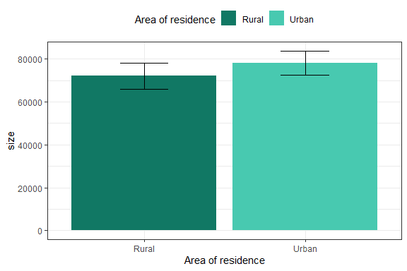
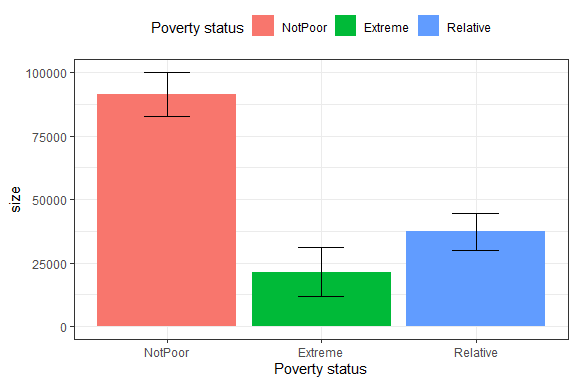
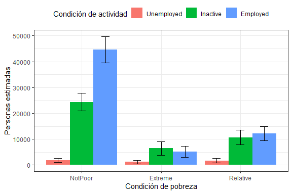
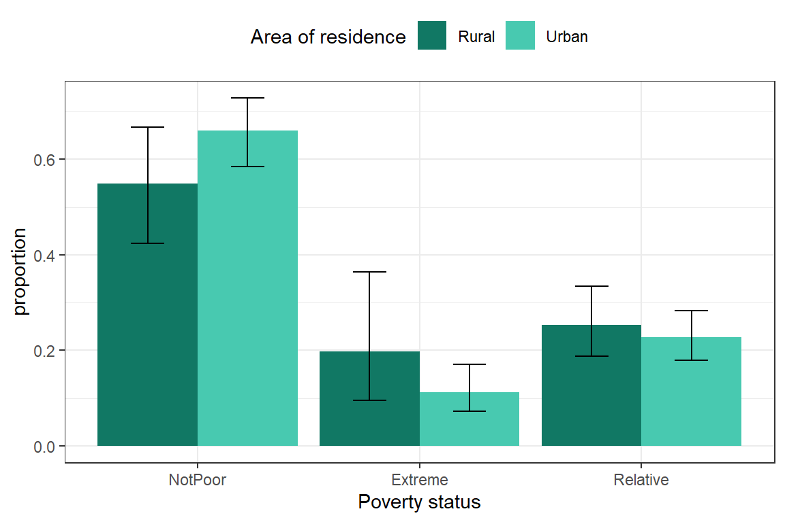
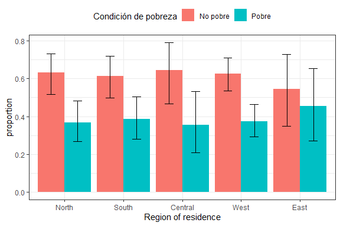
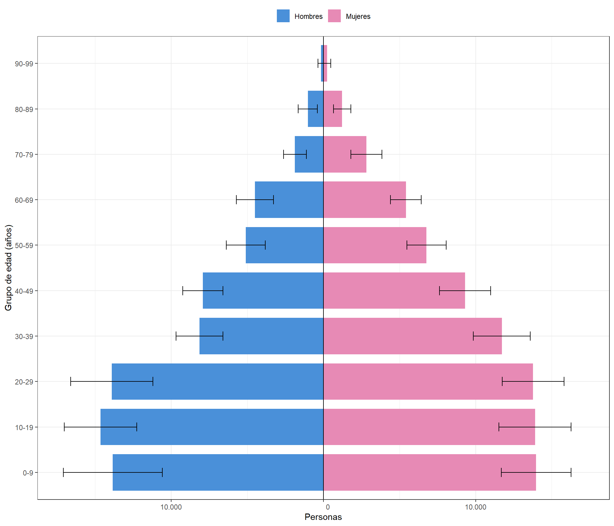
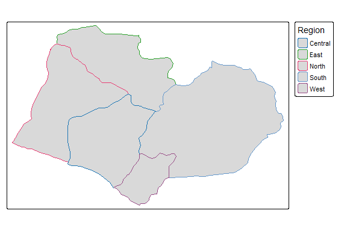
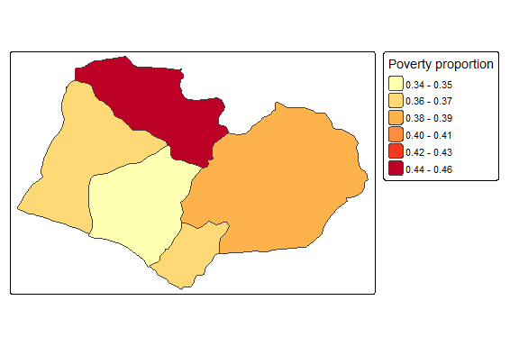
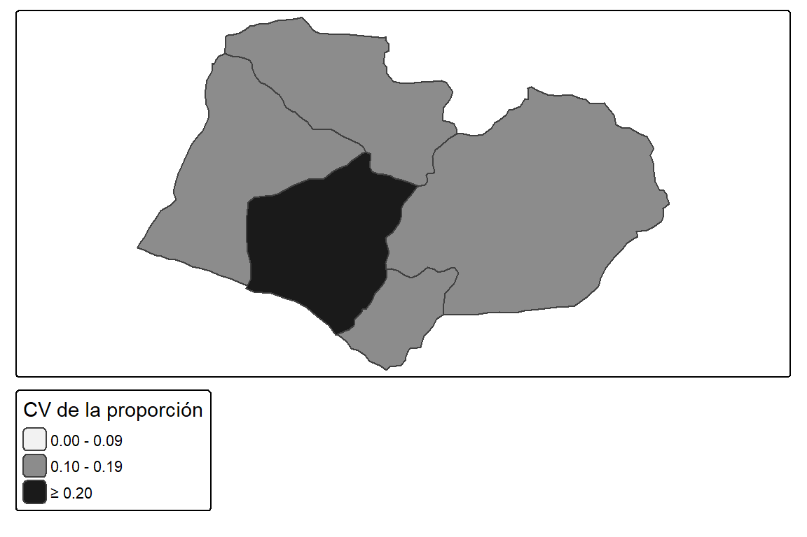
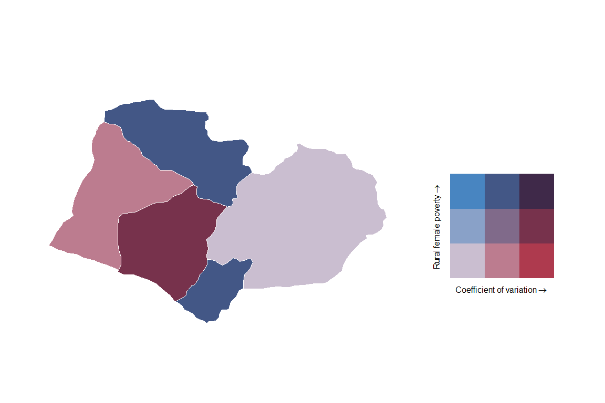

library(tidyverse)
survey_data <- readRDS("../data/sample.rds")3 Análisis de variables categóricas
En el análisis de encuestas de hogares, uno de los productos más habituales es la estimación de parámetros descriptivos asociados a variables categóricas, los cuales permiten sintetizar las principales características de la población. Estas medidas facilitan una representación clara y comprensible de fenómenos sociales a partir de información recolectada mediante muestras probabilísticas (CEPAL 2023).
Como explica Agresti (2019), las frecuencias y las proporciones se encuentran entre los indicadores descriptivos más utilizados para analizar variables categóricas. Las frecuencias representan el número de personas u hogares que pertenecen a cada categoría, como la cantidad de personas en condición de pobreza, mientras que las proporciones expresan el peso relativo de cada categoría dentro de la población, como el porcentaje de hogares en situación de hacinamiento. Aunque el análisis descriptivo de este tipo de variables se apoya principalmente en estos parámetros, también puede complementarse con medidas derivadas de variables numéricas, como los cuantiles y los indicadores de desigualdad que se estudiarán en el Capítulo 4.
Para estimar correctamente estas medidas a partir de una encuesta de hogares, es necesario comenzar por definir el diseño de muestreo. Este paso permite incorporar las características de la encuesta, incluidos los factores de expansión, las unidades primarias de muestreo y los estratos de selección. La adecuada especificación de estos elementos es fundamental para que las frecuencias, las proporciones y las demás estadísticas estimadas representen apropiadamente a la población objetivo y para que sus medidas de precisión reflejen la variabilidad introducida por el diseño muestral. Este capítulo aplica los fundamentos del diseño muestral estudiados en el capítulo 2. Se comienza por la preparación de los datos y se avanza desde la composición de la población hasta la comparación de grupos y la comunicación de resultados.
3.1 Preparación de los datos y especificación del diseño
Según Naciones Unidas (2009, sec. 7.8), es fundamental que la estructura del diseño muestral sea tenida en cuenta en el proceso de inferencia al estimar estadísticas oficiales basadas en encuestas de hogares. Como se ha insistido en este documento, ignorar los pesos puede sesgar las estimaciones y omitir la estructura del diseño puede producir errores estándar inadecuados. En este sentido los programas estadísticos incorporan funcionalidades específicas para manejar datos provenientes de encuestas con diseños complejos.
El archivo sample.rds, almacenado en la carpeta data, contiene una muestra bietápica estratificada de la población BigCity, disponible en el paquete TeachingSampling de R (Gutiérrez 2020). La selección se realiza en dos etapas: en la primera se seleccionan unidades primarias de muestreo (UPM) dentro de cada estrato y, en la segunda, hogares dentro de las UPM seleccionadas. La base reúne la información de las personas que integran esos hogares y conserva los identificadores de estrato, UPM y hogar, junto con los factores de expansión necesarios para el análisis.
El diseño de esta muestra sigue una metodología tradicional de las encuestas de hogares, descrita en CEPAL (2023, V, sec. B). Se recomienda al lector consultar esa sección para profundizar en la teoría detrás de estos diseños de muestreo y el proceso de selección. Es de aclarar que, la conceptualización de la selección de diseños de muestreo quedan fuera del alcance de este libro, cuyo propósito es el análisis de los datos de encuestas de hogares con R, incorporando el diseño muestral en la inferencia. Para estudiar los fundamentos y métodos de selección de muestras, pueden consultarse las obras de Kish (1965), Särndal et al. (2003) y Gutiérrez (2016).
Para implementar la selección de muestras en R existen paquetes especializados, como sampling (Tillé y Matei 2025), y TeachingSampling (Gutiérrez 2020). Estos paquetes ofrecen herramientas para seleccionar muestras probabilísticas bajo distintos diseños y constituyen recursos complementarios para quienes deseen estudiar o reproducir esta etapa del trabajo con encuestas.
De acuerdo con R Core Team (2026), las bases de datos utilizadas en el análisis de encuestas pueden encontrarse en una amplia variedad de formatos, como xlsx, dat, csv, parquet, sas7bdat, sav y txt, entre otros. Sin embargo, una buena práctica consiste en importar la información desde cualquiera de estos formatos y guardarla posteriormente en un archivo con extensión .rds, un formato nativo de R que permite almacenar distintos tipos de objetos, como bases de datos, vectores, matrices o listas. Otro formato nativo de R es .RData, que permite guardar varios objetos en un mismo archivo. En contraste, los archivos .rds almacenan un único objeto, lo que facilita un manejo más controlado, explícito y reproducible de la información. Por esta razón, se recomienda utilizar preferentemente el formato .rds al documentar proyectos y desarrollar análisis reproducibles.
A continuación, se carga el archivo sample.rds, que se utilizará a lo largo de los capítulos aplicados para ilustrar la sintaxis computacional del análisis de encuestas:
El objeto survey_data contiene la información del archivo sample.rds: cada fila corresponde a una unidad observada y las columnas incluyen las variables de interés y la información del diseño muestral. El siguiente código computacional utiliza glimpse() para examinar el número de observaciones y variables, sus nombres, sus tipos de datos y una muestra de los valores registrados.
dplyr::glimpse(survey_data)Rows: 2,605
Columns: 20
$ HHID <chr> "idHH00031", "idHH00031", "idHH00031", "idHH00031", "idHH0…
$ Stratum <chr> "idStrt001", "idStrt001", "idStrt001", "idStrt001", "idStr…
$ NIh <int> 9, 9, 9, 9, 9, 9, 9, 9, 9, 9, 9, 9, 9, 9, 9, 9, 9, 9, 9, 9…
$ nIh <dbl> 2, 2, 2, 2, 2, 2, 2, 2, 2, 2, 2, 2, 2, 2, 2, 2, 2, 2, 2, 2…
$ dI <dbl> 4.5, 4.5, 4.5, 4.5, 4.5, 4.5, 4.5, 4.5, 4.5, 4.5, 4.5, 4.5…
$ PersonID <chr> "idPer01", "idPer02", "idPer03", "idPer04", "idPer05", "id…
$ PSU <chr> "PSU0003", "PSU0003", "PSU0003", "PSU0003", "PSU0003", "PS…
$ Zone <chr> "Rural", "Rural", "Rural", "Rural", "Rural", "Rural", "Rur…
$ Sex <chr> "Male", "Female", "Female", "Male", "Female", "Female", "F…
$ Age <int> 68, 56, 24, 26, 3, 61, 23, 5, 1, 59, 50, 33, 81, 76, 45, 4…
$ MaritalST <fct> Married, Married, Married, Married, NA, Widowed, Separated…
$ Income <dbl> 409.9, 409.9, 409.9, 409.9, 409.9, 823.8, 823.8, 823.8, 82…
$ Expenditure <dbl> 346.3, 346.3, 346.3, 346.3, 346.3, 392.2, 392.2, 392.2, 39…
$ Employment <fct> Employed, Employed, Employed, Employed, NA, Employed, Inac…
$ Poverty <fct> NotPoor, NotPoor, NotPoor, NotPoor, NotPoor, NotPoor, NotP…
$ dki <dbl> 8.00, 8.00, 8.00, 8.00, 8.00, 8.00, 8.00, 8.00, 8.00, 8.00…
$ dk <dbl> 36, 36, 36, 36, 36, 36, 36, 36, 36, 36, 36, 36, 42, 42, 42…
$ wk <dbl> 34.5, 33.6, 33.6, 34.5, 33.6, 33.6, 33.6, 34.5, 33.6, 34.5…
$ Region <fct> North, North, North, North, North, North, North, North, No…
$ CatAge <ord> 60-69, 50-59, 20-29, 20-29, 0-9, 60-69, 20-29, 0-9, 0-9, 5…La base de datos muestral contiene 2.605 registros individuales y 20 variables. Cada fila corresponde a una persona, identificada mediante PersonID, y se encuentra vinculada con su hogar a través de HHID. Además de variables sociodemográficas y económicas, como sexo, edad, estado civil, condición de empleo, ingreso, gasto1 y situación de pobreza, la base incluye información necesaria para representar el diseño de muestreo complejo, como el estrato (Stratum), la unidad primaria de muestreo (PSU) y los factores de expansión (wk). También incorpora variables de clasificación geográfica y demográfica, como zona, región y grupo de edad.
La base sample.rds está organizada a nivel de personas. En la notación del libro, el peso de diseño y el factor de expansión final se representan, respectivamente, por dk y wk. Aunque el peso de diseño (dk) es común a los integrantes de un mismo hogar, el factor de expansión final (wk) puede diferir entre ellos debido a la calibración realizada a nivel de personas. Por tanto, debe distinguirse entre la unidad de observación y la unidad sobre la que se desea realizar la inferencia: al analizar personas, la suma de sus factores de expansión estima el tamaño poblacional; al analizar hogares, se requiere una sola observación y un factor de expansión por hogar.
La construcción y el tratamiento de factores de expansión para bases de personas y de hogares, así como los procedimientos para asegurar la coherencia entre ambos niveles, están fuera del alcance de este libro. El lector interesado puede consultar CEPAL (2023, IX, sec. E.2). En este sentido, para los ejemplos cuyo objetivo sea obtener estadísticas de hogares, se adoptará el método de la persona principal descrito por Alexander (1987). En este libro, esa persona será la jefa o el jefe del hogar, identificado mediante PersonID == "idPer01". Por ende, se conservará su registro y se utilizará su factor de expansión final como factor del hogar. Así, cada hogar contribuirá una sola vez a las estimaciones. Esta elección constituye una convención explícita para los ejemplos y no garantiza, por sí sola, la coherencia entre las estimaciones de personas y hogares ni sustituye un factor de hogar específicamente construido para una encuesta.
3.1.1 Corroboraciones preparatorias
Antes de interpretar los resultados de una encuesta, conviene realizar comprobaciones que permitan detectar inconsistencias en la población representada por los factores de expansión. Por ejemplo, conviene verificar que la columna de factores de expansión no contenga valores faltantes, no finitos ni menores o iguales a cero, y que los factores correspondan a la unidad de análisis de la base. En una base organizada a nivel de personas, la suma de los pesos estima el total de personas representadas. Para estimar el total de hogares, se requiere una base de hogares o una regla explícita para seleccionar una observación por hogar y asignarle el peso correspondiente.
Otra corroboración simple consiste en sumar los factores de expansión en toda la base y por subpoblaciones. La suma de los factores de expansión debe contrastarse con el total proyectado de la población que la encuesta pretende representar. Cuando los pesos se han calibrado a ese total, su coincidencia es una propiedad esperada del procedimiento; aunque también conviene revisar otras desagregaciones o indicadores que no hayan intervenido directamente en el ajuste. La concordancia de estos diagnósticos respalda la coherencia de los resultados. Ante diferencias relevantes, corresponde revisar la cobertura, los valores faltantes, la clasificación de las unidades, los factores de expansión y la especificación del diseño antes de atribuirlas a características de la población.
Asimismo, el tamaño medio del hogar puede compararse con el censo o con otra referencia demográfica pertinente, considerando las diferencias de fecha, cobertura y definición de hogar. Otros indicadores útiles para estas comprobaciones son el índice de masculinidad y la razón de dependencia demográfica, cuya estimación se desarrolla en el capítulo 4. Su comparación con las proyecciones de población puede revelar diferencias que una revisión exclusivamente agregada no detectaría. El siguiente código computacional revisa la validez de los factores de expansión y calcula la población representada por la base, además del tamaño medio de los hogares observados en la muestra.
household_sizes <- survey_data %>%
filter(!is.na(HHID)) %>%
count(HHID, name = "household_size")
weight_check <- survey_data %>%
summarise(
observations = n(),
missing_weights = sum(is.na(wk)),
nonfinite_weights = sum(!is.na(wk) & !is.finite(wk)),
nonpositive_weights = sum(!is.na(wk) & is.finite(wk) & wk <= 0),
estimated_population = sum(wk, na.rm = TRUE),
mean_sample_household_size = mean(household_sizes$household_size)
)
weight_check observations missing_weights nonfinite_weights nonpositive_weights
1 2605 0 0 0
estimated_population mean_sample_household_size
1 150266 3.74La base contiene 2.605 observaciones. Se encontraron 0 factores de expansión faltantes, 0 no finitos y 0 iguales o menores que cero. La suma de los factores es 150.266, que estima la población de personas representada por la base. El tamaño medio de los hogares observados en la muestra es de 3.74 personas. Este promedio es descriptivo y no una estimación ponderada del tamaño medio de los hogares de la población.
3.1.2 Definición del diseño de muestreo
Una vez cargada la encuesta de hogares en R, el siguiente paso es definir el diseño muestral del cual proviene dicha muestra. Para ello se utilizará el paquete srvyr, que surge como un complemento del paquete survey. Estas librerías permiten definir objetos tipo survey.design, a los que se aplican las funciones de estimación y análisis de encuestas, y que pueden ser combinadas con la programación del paquete tidyverse. A continuación, se muestra un ejemplo en el que se define el objeto survey_design, de clase tbl_svy y compatible con los métodos de survey para la encuesta:
options(survey.lonely.psu = "adjust")
library(survey)
library(srvyr)
survey_design <- survey_data %>%
as_survey_design(
strata = Stratum,
ids = PSU,
weights = wk,
nest = TRUE
)Como explica Lumley et al. (2026), la opción options(survey.lonely.psu = "adjust") define cómo el paquete survey debe tratar los estratos que contienen una sola UPM en la muestra. En estos estratos no es posible calcular directamente la variabilidad entre UPM, porque no existe una segunda unidad con la cual realizar la comparación. Con el método "adjust", la contribución de la UPM solitaria a la varianza se calcula centrando su estimación en la media general de las UPM de la muestra, en lugar de utilizar la media del propio estrato. Este ajuste evita que la contribución del estrato sea omitida o quede indefinida y suele producir una estimación conservadora de la varianza. La opción no modifica las estimaciones puntuales, sino únicamente sus varianzas, errores estándar e intervalos de confianza. Su aplicación debe distinguirse del caso en el que una UPM sea seleccionada con probabilidad de inclusión uno. En cualquier caso, la contribución a la varianza debe especificarse mediante la información apropiada del diseño.
Así mismo, survey_data corresponde a la base de datos que contiene la muestra seleccionada. A partir de estos datos, la función as_survey_design() convierte la información en un objeto de clase tbl_svy, el cual almacena todos los elementos necesarios para describir el diseño muestral de la encuesta. Entre ellos se incluyen la variable de estratificación (strata), que identifica los estratos definidos en el diseño, junto con la variable que representa las unidades primarias de muestreo (UPM) o conglomerados seleccionados en la primera etapa del muestreo (ids). Asimismo, el argumento weights define la variable que contiene los factores de expansión asociados a cada observación. Finalmente, la opción nest = TRUE vuelve únicos dentro de cada estrato los identificadores de conglomerado que pudieran repetirse entre estratos.
Una vez definido el diseño, conviene revisar cómo quedó registrado en survey_design. El siguiente código computacional muestra un resumen de su estructura, los estratos y las unidades primarias de muestreo identificados en los datos, así como las probabilidades que el paquete deriva de los pesos especificados.
summary(survey_design)El resumen identifica un diseño estratificado con 238 conglomerados distribuidos en 119 estratos. La tabla Stratum Sizes detalla, para cada estrato, el número de observaciones (obs) y las UPM especificadas y observadas (design.PSU y actual.PSU). En esta base hay dos UPM en cada estrato.
La sección Probabilities resume los valores de probabilidad que survey obtiene a partir de los pesos incluidos en el objeto. En esta base, van de 0,003794 a 0,089186, con una mediana de 0,019034 y un promedio de 0,024242; los cuartiles son 0,014140 y 0,029810. Como aquí se especificó el factor de expansión final wk, el paquete presenta sus inversos. Estos valores describen las probabilidades implícitas en wk; no necesariamente coinciden con las probabilidades originales de selección, porque el factor final puede incorporar ajustes o calibración. En la notación del capítulo 2, las probabilidades originales se relacionan con el peso básico mediante \(\pi_k=1/d_k\).
Por último, la salida clasifica el objeto como un diseño de conglomerados estratificado con una etapa. Esa descripción corresponde a las variables incluidas aquí: Stratum y PSU. La indicación with replacement refleja el supuesto que usa survey para calcular la varianza cuando no se especifica una corrección por población finita; no afirma por sí sola que la selección original se haya realizado con reemplazo.
3.1.3 Variables derivadas y subpoblaciones
A partir de la información original de la encuesta, también es posible construir algunas variables adicionales que serán utilizadas en los ejercicios desarrollados a lo largo de este capítulo. El siguiente código computacional define una variable dicotómica que identifica si una persona se encuentra o no en condición de pobreza, considerando como pobres a quienes pertenecen a cualquiera de las categorías de pobreza registradas en la encuesta. Asimismo, se crea una variable que permite distinguir a las personas desempleadas del resto de la población y otra que clasifica a las personas en dos grupos de edad: menores de 18 años y personas de 18 años o más. Estas variables facilitarán la desagregación de los resultados y la comparación de indicadores entre distintos grupos de la población.
survey_design <- survey_design %>%
mutate(
poor = ifelse(Poverty != "NotPoor", 1, 0),
unemployed = ifelse(Employment == "Unemployed", 1, 0),
age_18 = if_else(Age < 18, "< 18 years", ">= 18 years")
)En el código anterior se crean nuevas variables derivadas utilizando la función mutate() del paquete dplyr. Las variables poor y unemployed se construyen mediante la función ifelse(), que evalúa una condición lógica y asigna un valor dependiendo de si esta se cumple o no. En este caso, las variables toman el valor 1 cuando la persona se encuentra en condición de pobreza o desempleo, respectivamente, y 0 en caso contrario. Por su parte, la variable age_18 se genera mediante la función case_when(), la cual permite definir categorías a partir de una o varias condiciones de forma más clara y flexible que ifelse(). Esta función resulta especialmente útil cuando se requiere construir variables categóricas con múltiples niveles. En el ejemplo, las personas menores de 18 años se clasifican en la categoría "< 18 years", mientras que las edades observadas restantes se agrupan en la categoría ">= 18 years"; las edades faltantes se conservan como tales. La variable unemployed identifica desocupación: el valor cero incluye tanto personas ocupadas como inactivas y no debe etiquetarse como «ocupado». Asimismo, se presupone que las categorías observadas de Poverty distintas de "NotPoor" corresponden a pobreza; los valores faltantes permanecen como NA.
Además de las variables categóricas definidas previamente, es necesario establecer subpoblaciones que permitan obtener estimaciones desagregadas y comparar los indicadores entre distintos grupos. El siguiente código computacional define seis subpoblaciones para los ejemplos del capítulo: población urbana, población rural, mujeres, hombres, población económicamente activa y población en edad de trabajar. Para esta base, las dos últimas se restringen a personas de 15 años o más. La población en edad de trabajar incluye también a las personas inactivas y constituye el denominador de la tasa de ocupación; mientras que la población económicamente activa incluye a las personas ocupadas y desocupadas y constituye el denominador de la tasa de desocupación.
urban_subset <- survey_design %>%
filter(Zone == "Urban")
rural_subset <- survey_design %>%
filter(Zone == "Rural")
female_subset <- survey_design %>%
filter(Sex == "Female")
male_subset <- survey_design %>%
filter(Sex == "Male")
working_age_subset <- survey_design %>%
filter(Age >= 15)
labor_force_subset <- survey_design %>%
filter(
Age >= 15,
Employment %in% c("Employed", "Unemployed")
)Los dominios se obtienen filtrando el objeto de diseño ya construido. Así se conserva la información necesaria para estimar la variabilidad del dominio bajo el diseño original. Filtrar primero los microdatos y reconstruir después el diseño puede alterar esa información. Las copias de los dominios contienen las variables creadas hasta este punto; no se actualizan automáticamente si más adelante se modifica el objeto principal.
3.2 Estimación de parámetros descriptivos
Esta sección presenta los principales parámetros descriptivos utilizados para analizar variables categóricas en encuestas de hogares. En particular, se aborda la estimación de tamaños poblacionales, proporciones y distribuciones por dominios o subpoblaciones, incorporando los factores de expansión y la estructura del diseño muestral. Estos indicadores permiten describir la composición de la población y cuantificar la presencia relativa de distintos grupos de interés.
Con el diseño de muestreo ya especificado y los dominios de análisis definidos, esta sección estima tamaños poblacionales y proporciones, junto con sus medidas de precisión. En cada ejercicio se parte del objeto de diseño y se selecciona el dominio de interés; si se comparan categorías, estas se agrupan para obtener una estimación por grupo. El operador %>% conecta las operaciones, group_by() indica cómo se forman los grupos de comparación y summarise() solicita los resultados.
3.2.1 Tamaños poblacionales
En el análisis de encuestas de hogares, es fundamental estimar el tamaño de las distintas subpoblaciones y la proporción que cada una representa dentro de la población total (CEPAL 2023). Estas estimaciones permiten cuantificar grupos definidos por características demográficas o socioeconómicas y describir su importancia relativa. Por ejemplo, conocer el número y la proporción de personas que se encuentran por debajo de la línea de pobreza o han alcanzado un determinado nivel educativo contribuye a identificar brechas entre grupos, evaluar sus condiciones de bienestar y generar información relevante para el diseño de políticas públicas.
Las subpoblaciones se definen mediante variables categóricas que clasifican a las unidades de la población finita en grupos mutuamente excluyentes, como las distintas condiciones de actividad económica o los niveles educativos alcanzados. El tamaño de una subpoblación corresponde al número total de personas u hogares de la población que pertenecen a una categoría determinada. Para estimarlo a partir de una encuesta, se suman los pesos muestrales de las unidades clasificadas en esa categoría, dado que cada peso indica cuántas personas u hogares de la población representa la unidad observada en la muestra. A partir de estas estimaciones también puede calcularse la proporción que cada subpoblación representa respecto del total poblacional. Por ende, el estimador del tamaño de la población (Särndal et al. 2003), se define como:
\[ \hat{N} = \sum_{h} \sum_{i} \sum_{k} w_{hik} \tag{3.1}\]
En donde, \(w_{hik}\) es el peso o factor de expansión de la unidad \(k\) en la UPM \(i\) del estrato \(h\). Para estimar la varianza de \(\hat{N}\), se agrupan las contribuciones ponderadas por UPM. La contribución de cada UPM se define como:
\[ \hat{N}_{hi}=\sum_k w_{hik}. \]
Esta suma de pesos representa la contribución de la UPM \(i\) del estrato \(h\) al tamaño poblacional estimado. El promedio de las contribuciones en el estrato es:
\[ \bar{\hat{N}}_h=\frac{1}{m_h}\sum_{i=1}^{m_h}\hat{N}_{hi}. \]
Aquí \(m_h\) es el número de UPM seleccionadas en el estrato \(h\). El promedio permite medir la dispersión entre sus contribuciones. Bajo la aproximación con reemplazo en la primera etapa, sin corrección por población finita, la varianza estimada es (Särndal et al. 2003):
\[ \widehat{\operatorname{Var}}(\hat{N}) = \sum_h \frac{m_h}{m_h-1} \sum_{i=1}^{m_h}\left(\hat{N}_{hi}-\bar{\hat{N}}_h\right)^2. \tag{3.2}\]
Esta expresión mide la dispersión de las contribuciones de las UPM dentro de cada estrato; su raíz cuadrada es el error estándar de \(\hat{N}\). Corresponde a la aproximación utilizada al especificar estratos, UPM y pesos sin el argumento fpc, como se hace en este capítulo. La fórmula supone \(m_h>1\); los estratos con una sola UPM requieren el tratamiento descrito en la preparación del diseño. Los pesos se consideran dados: si se desea incorporar la calibración a la estimación de la varianza, sus restricciones deben estar representadas en el objeto de diseño, y no únicamente en los valores de los pesos.
Asimismo, la estimación del tamaño de una subpoblación sigue el mismo principio que la estimación del tamaño total, pero se restringe a las unidades que presentan una característica determinada. Para estimar cuántas personas u hogares pertenecen a una categoría específica \(d\), se identifica en la muestra a las unidades que cumplen dicha condición y se suman sus pesos muestrales. De esta manera, cada unidad contribuye a la estimación de acuerdo con el número de unidades de la población que representa:
\[ \hat{N}_d = \sum_{h} \sum_{i} \sum_{k} w_{hik} \ I(y_{hik}=d) \tag{3.3}\]
donde \(\hat{N}_d\) representa el tamaño estimado de la subpoblación perteneciente a la categoría \(d\). Por su parte, \(I(y_{hik}=d)\) es una variable binaria que toma el valor de 1 si la unidad \(k\) de la UPM \(i\) en el estrato \(h\) pertenece a la categoría \(d\) de la variable de interés \(y\), y 0 en caso contrario. Si el total de la categoría \(d\) se fija mediante calibración a un control externo conocido, \(\hat{N}_d\) coincide con ese control y su varianza respecto del diseño es nula cuando se incorpora esa restricción a la estimación de la varianza (Gutiérrez 2016). Introducir únicamente los pesos calibrados en as_survey_design() no comunica al programa dicha restricción. Para el tamaño de la subpoblación, la contribución de cada UPM está dada por:
\[ \hat{N}_{hi,d}=\sum_k w_{hik}I(y_{hik}=d). \]
Esta suma incluye únicamente los pesos de las unidades que pertenecen a la categoría \(d\). El promedio de estas contribuciones dentro del estrato se calcula como:
\[ \bar{\hat{N}}_{h,d}=\frac{1}{m_h}\sum_{i=1}^{m_h}\hat{N}_{hi,d}. \]
El promedio considera todas las UPM seleccionadas en el estrato, incluidas aquellas cuya contribución al dominio es cero. Bajo los mismos supuestos utilizados para \(\hat{N}\), su varianza estimada es:
\[ \widehat{\operatorname{Var}}(\hat{N}_d) = \sum_h \frac{m_h}{m_h-1} \sum_{i=1}^{m_h}\left(\hat{N}_{hi,d}-\bar{\hat{N}}_{h,d}\right)^2. \tag{3.4}\]
La fórmula cuantifica la variación entre las contribuciones de las UPM al tamaño del dominio \(d\). Se conservan todas las UPM del diseño original: aquellas que no contienen personas del dominio aportan \(\hat{N}_{hi,d}=0\), y \(m_h\) sigue siendo el número de UPM seleccionadas en el estrato, no solamente el de las que contienen integrantes del dominio. El error estándar de \(\hat{N}_d\) es la raíz cuadrada de esta varianza. Este procedimiento explica por qué los dominios se definen sobre el objeto de diseño completo.
La función survey_total() estima totales poblacionales incorporando los factores de expansión y el diseño muestral. Si se omite x, estima el tamaño de la población que se quiere representar. Su sintaxis general es:
survey_total(
x = NULL,
na.rm = FALSE,
vartype = c("se", "ci", "var", "cv"),
level = 0.95,
deff = FALSE
)El argumento x indica la variable cuyo total se desea estimar; si se omite, la función calcula el tamaño ponderado de unidades. El argumento na.rm excluye los valores faltantes del cálculo, pero no ajusta por sí mismo los efectos de la no respuesta. Su valor predeterminado es FALSE. Además, vartype permite solicitar una o varias medidas de precisión: error estándar ("se"), intervalo de confianza ("ci"), varianza ("var") o coeficiente de variación ("cv"). level establece el nivel de confianza de los intervalos y su valor predeterminado es 0.95. Los intervalos también pueden calcularse con confint() sobre estimadores compatibles del paquete survey. Por último, deff indica si se devuelve el efecto de diseño.
Cuando se solicita vartype = "ci", se construyen intervalos de confianza de Wald sumando y restando a la estimación el producto de su error estándar por un cuantil de la distribución \(t\) de Student Lumley (2010). Si se omite el argumento df, srvyr utiliza los grados de libertad del diseño con el que se realiza el cálculo, antes de dividirlo en los grupos definidos mediante group_by(). El argumento level fija el nivel de confianza, que en estos ejemplos es del 95 %, salvo cuando se indica otro nivel.
El siguiente código computacional utiliza el diseño muestral definido previamente para generar resúmenes por categoría de la variable Zone. Para ello, los datos se agrupan según la zona geográfica, lo que permite obtener resultados independientes para cada uno de estos dominios de estudio. A partir de este procedimiento se producen dos tipos principales de resultados. En primer lugar, se calcula el número de observaciones efectivamente recolectadas en la muestra, sin considerar los factores de expansión, usando la función unweighted(). En segundo lugar, se estima el tamaño poblacional asociado a cada dominio incorporando la información del diseño de muestreo. Junto con las estimaciones poblacionales también se obtienen medidas de precisión, como el error estándar y el intervalo de confianza. El objeto zone_population_size conserva estos resultados, que se presentan en la tabla 3.1. En las tablas del capítulo, EE indica el error estándar; «LI 95 %» e «LS 95 %» indican los límites inferior y superior del intervalo de confianza del 95 %.
zone_population_size <- survey_design %>%
group_by(Zone) %>%
summarise(
n = unweighted(n()),
size = survey_total(vartype = c("se", "ci"))
)
zone_population_size| Zona | Muestra | Población | EE | LI 95 % | LS 95 % |
|---|---|---|---|---|---|
| Rural | 1297 | 72102 | 3062 | 66039 | 78165 |
| Urban | 1308 | 78164 | 2847 | 72526 | 83802 |
En la salida, n cuenta los registros observados sin ponderar, mientras que size contiene el total poblacional estimado. Las columnas size_se, size_low y size_upp presentan, respectivamente, el error estándar y los límites del intervalo de confianza. El coeficiente de variación se calcula como el error estándar dividido por la estimación; para expresarlo en porcentaje, se multiplica por 100. En el código, unweighted(n()) obtiene el conteo muestral y survey_total() el total ponderado.
En efecto, el tamaño de muestra fue de 1.297 personas en la zona rural y de 1.308 en la zona urbana. A partir de estas muestras se estimó una población de 72.102 personas para la zona rural, con un error estándar de 3.062, y de 78.164 personas para la zona urbana, con un error estándar de 2.847. Considerando un nivel de confianza del 95%, los intervalos de confianza para las estimaciones poblacionales fueron de 66.038,5 a 78.165,5 personas en la zona rural y de 72.526,2 a 83.801,8 personas en la zona urbana. El mismo procedimiento permite describir la distribución de la población por grupos de edad, manteniendo los factores de expansión y la estructura del diseño muestral.
Para este ejemplo se utiliza directamente CatAge, la variable que contiene los grupos de edad en sample.rds. Sus categorías son grupos decenales ordenados: de 0 a 9, de 10 a 19, de 20 a 29 años, y así sucesivamente hasta el grupo de 90 a 99 años. El siguiente código computacional agrupa el objeto de diseño por CatAge y obtiene el número de personas observadas en la muestra y el tamaño poblacional estimado de cada grupo, junto con su error estándar y su intervalo de confianza del 95 %, como se presenta en la tabla 3.2.
age_population_size <- survey_design %>%
group_by(CatAge) %>%
summarise(
sample_size = unweighted(n()),
size = survey_total(
vartype = c("se", "ci"),
level = 0.95
),
.groups = "drop"
)
age_population_size| Edad (años) | Muestra | Población | EE | LI 95 % | LS 95 % |
|---|---|---|---|---|---|
| 0-9 | 468 | 27804 | 2396 | 23060.1 | 32548 |
| 10-19 | 509 | 28554 | 1815 | 24960.4 | 32148 |
| 20-29 | 478 | 27677 | 1966 | 23785.3 | 31569 |
| 30-39 | 347 | 19860 | 1401 | 17084.7 | 22634 |
| 40-49 | 300 | 17234 | 1198 | 14861.7 | 19606 |
| 50-59 | 220 | 11876 | 1090 | 9719.1 | 14034 |
| 60-69 | 162 | 9924 | 887 | 8166.4 | 11681 |
| 70-79 | 81 | 4700 | 740 | 3235.6 | 6165 |
| 80-89 | 34 | 2246 | 460 | 1336.4 | 3157 |
| 90-99 | 6 | 391 | 166 | 61.8 | 720 |
La tabla 3.2 distingue el tamaño muestral, que cuenta los registros observados, del tamaño poblacional, que suma sus factores de expansión. El grupo de 10-19 años presenta el mayor tamaño poblacional estimado, con aproximadamente 28.554 personas. En conjunto, los 10 grupos reúnen 2605 observaciones y representan una población estimada de 150.266 personas. Los errores estándar y los intervalos de confianza describen la incertidumbre muestral de cada estimación.
Además de estas características demográficas, el análisis puede extenderse a las condiciones socioeconómicas de la población. A continuación, se aplica el mismo procedimiento para estimar el número de personas según los distintos niveles de pobreza.
poverty_population_size <- survey_design %>%
group_by(Poverty) %>%
summarise(
size = survey_total(vartype = c("se", "ci"))
)
poverty_population_size| Pobreza | Población | EE | LI 95 % | LS 95 % |
|---|---|---|---|---|
| NotPoor | 91398 | 4395 | 82696 | 100101 |
| Extreme | 21519 | 4949 | 11719 | 31319 |
| Relative | 37349 | 3695 | 30032 | 44666 |
La tabla 3.3 refleja una población en la que la mayoría de las personas no vive en pobreza, pero en la que esa aparente normalidad convive con una fractura difícil de considerar marginal: cerca de 58.868 personas se encuentran en pobreza relativa o extrema. De ellas, 21.519 padecen las privaciones más severas y 37.349 permanecen por debajo de los niveles de vida socialmente aceptables.
Otra variable categórica relevante en las encuestas de hogares es el estado de ocupación. En este caso, la información se agrupa según las categorías de la variable Employment, lo que permite obtener estimaciones separadas para cada condición de actividad laboral de la población. Mediante el uso de la función group_by() es posible desagregar las estimaciones en niveles más detallados, facilitando el análisis comparativo entre los distintos grupos ocupacionales. En el siguiente código computacional, primero se excluyen los registros con valores faltantes en la variable de empleo, garantizando que los resultados se calculen únicamente con personas con condición de ocupación observada. Posteriormente, para cada categoría de ocupación se estima el tamaño poblacional, junto con el error estándar y los intervalos de confianza.
employment_population_size <- survey_design %>%
filter(!is.na(Employment)) %>%
group_by(Employment) %>%
summarise(
size = survey_total(vartype = c("se", "ci"))
)
employment_population_size| Condición de actividad | Población | EE | LI 95 % | LS 95 % |
|---|---|---|---|---|
| Unemployed | 4635 | 761 | 3129 | 6141 |
| Inactive | 41465 | 2163 | 37183 | 45748 |
| Employed | 61877 | 2540 | 56847 | 66907 |
A partir de los resultados presentados en la tabla 3.4, se estima que la población ocupada asciende a 61.877 personas. Por su parte, la población inactiva se estima en 41.465 personas, mientras que cerca de 4.635 personas se encontrarían desempleadas. En conjunto, las estimaciones muestran que los desempleados representan el grupo de menor tamaño, aunque la amplitud relativa de su intervalo de confianza indica una mayor incertidumbre en comparación con las estimaciones de la población ocupada e inactiva.
Las estimaciones también pueden desagregarse simultáneamente por más de una variable categórica. Por ejemplo, un primer análisis de las estructuras poblacionales consiste en estimar los tamaños entre el grupo de edad y el sexo. El código agrupa el diseño por edad y sexo con group_by() y guarda en age_sex_population_size el total estimado para cada combinación mediante summarise() y survey_total(). Como CatAge es un factor ordenado, arrange(Sex, CatAge) conserva el orden de los grupos desde el de menor edad hasta el de mayor edad. Como es posible que algunos grupos de edad no tengan un tamaño de muestra lo sufcientemente grande para producir cifras confiables, algunos de los intervalos de confianza resultan con límites inferiores menores a cero. En ese caso, se usa la función mutate para truncar estos valores en cero. La tabla 3.5 presenta únicamente tamaños poblacionales estimados y sus medidas de precisión, sin incluir el número de observaciones de la muestra.
age_sex_population_size <- survey_design %>%
group_by(CatAge, Sex) %>%
summarise(
size = survey_total(
vartype = c("se", "ci"),
level = 0.95
),
.groups = "drop"
) %>%
mutate(size_low = pmax(size_low, 0)) %>%
arrange(Sex, CatAge)
age_sex_population_size| Edad (años) | Sexo | Población | EE | LI 95 % | LS 95 % |
|---|---|---|---|---|---|
| 0-9 | Female | 13973 | 1158 | 11681 | 16265 |
| 10-19 | Female | 13909 | 1196 | 11540 | 16277 |
| 20-29 | Female | 13773 | 1025 | 11743 | 15803 |
| 30-39 | Female | 11723 | 947 | 9849 | 13598 |
| 40-49 | Female | 9313 | 851 | 7628 | 10999 |
| 50-59 | Female | 6772 | 652 | 5480 | 8063 |
| 60-69 | Female | 5425 | 512 | 4412 | 6438 |
| 70-79 | Female | 2832 | 516 | 1812 | 3853 |
| 80-89 | Female | 1227 | 288 | 657 | 1798 |
| 90-99 | Female | 242 | 126 | 0 | 492 |
| 0-9 | Male | 13831 | 1642 | 10579 | 17083 |
| 10-19 | Male | 14645 | 1201 | 12267 | 17023 |
| 20-29 | Male | 13904 | 1362 | 11206 | 16602 |
| 30-39 | Male | 8136 | 782 | 6588 | 9684 |
| 40-49 | Male | 7920 | 665 | 6604 | 9237 |
| 50-59 | Male | 5105 | 648 | 3822 | 6387 |
| 60-69 | Male | 4498 | 618 | 3275 | 5722 |
| 70-79 | Male | 1868 | 382 | 1112 | 2623 |
| 80-89 | Male | 1019 | 320 | 386 | 1652 |
| 90-99 | Male | 149 | 108 | 0 | 363 |
La tabla 3.5 permite comparar el número estimado de mujeres y hombres dentro de cada grupo de edad. Por ejemplo, entre los 20 y los 29 años se estiman aproximadamente 13.773 mujeres y 13.904 hombres. Los errores estándar y los intervalos de confianza del 95 % describen la incertidumbre de cada estimación, incorporando los pesos, los estratos y las UPM del diseño muestral.
El siguiente código computacional estima el tamaño poblacional de cada combinación de estado ocupacional y condición de pobreza. Los resultados de la tabla 3.6 permiten describir la asociación entre ambas variables, sin establecer una relación causal.
employment_poverty_population_size <- survey_design %>%
filter(!is.na(Employment)) %>%
group_by(Employment, Poverty) %>%
cascade(
size = survey_total(vartype = c("se", "ci")),
.fill = "Total"
)
employment_poverty_population_size| Condición de actividad | Pobreza | Población | EE | LI 95 % | LS 95 % |
|---|---|---|---|---|---|
| Unemployed | NotPoor | 1768 | 405 | 966 | 2571 |
| Unemployed | Extreme | 1169 | 348 | 480 | 1859 |
| Unemployed | Relative | 1697 | 458 | 791 | 2604 |
| Unemployed | Total | 4635 | 761 | 3129 | 6141 |
| Inactive | NotPoor | 24346 | 1736 | 20908 | 27784 |
| Inactive | Extreme | 6422 | 1321 | 3807 | 9037 |
| Inactive | Relative | 10697 | 1460 | 7806 | 13589 |
| Inactive | Total | 41465 | 2163 | 37183 | 45748 |
| Employed | NotPoor | 44600 | 2596 | 39460 | 49741 |
| Employed | Extreme | 5128 | 1122 | 2907 | 7349 |
| Employed | Relative | 12149 | 1347 | 9483 | 14816 |
| Employed | Total | 61877 | 2540 | 56847 | 66907 |
| Total | Total | 107977 | 3466 | 101115 | 114839 |
Entre las 61.877 personas ocupadas, 17.277 continúan en situación de pobreza, de las cuales 5.128 se encuentran en pobreza extrema y 12.149 en pobreza relativa. La vulnerabilidad es aún más visible entre las 41.465 personas inactivas, pues 17.119 viven en pobreza, mientras que entre las 4.635 personas desempleadas apenas 1.768 son clasificadas como no pobres y 2.866 padecen pobreza extrema o relativa. El comando cascade() extiende el resumen agrupado incorporando subtotales y un total general; .fill = "Total" identifica los niveles agregados. Los filtros de empleo delimitan aquí la población con condición de actividad observada y no implican una corrección por no respuesta.
3.2.2 Proporciones
Las proporciones permiten expresar el peso relativo que tienen determinados grupos dentro de la población. Por ejemplo, conocer el porcentaje de hogares que se encuentran por debajo de la línea de pobreza es esencial para evaluar desigualdades y caracterizar condiciones de bienestar. Para obtener este tipo de estimaciones, se calcula el promedio ponderado de la variable dicotómica, lo que asegura que la estimación represente adecuadamente la distribución poblacional. Al convertir las categorías originales en variables indicadoras, la proporción estimada se calcula como:
\[ \hat{p}_d = \frac{\hat{N}_d}{\hat{N}} = \frac{\displaystyle\sum_{h} \sum_{i} \sum_{k} w_{hik} \ I(y_{hik}=d)} {\displaystyle\sum_{h} \sum_{i} \sum_{k} w_{hik}} \tag{3.5}\]
La proporción estimada \(\hat{p}_d\) es una estadística no lineal, pues es el cociente de dos totales estimados que varían entre muestras. Por ello, aplicando la linealización de Taylor presentada en el capítulo 2 para estimadores de razón, su varianza se aproxima mediante (Gutiérrez 2016; Särndal et al. 2003):
\[ \widehat{\operatorname{Var}}(\hat{p}_d) \approx \frac{ \widehat{\operatorname{Var}}(\hat{N}_d) +\hat{p}_d^{\,2}\widehat{\operatorname{Var}}(\hat{N}) -2\hat{p}_d\,\widehat{\operatorname{Cov}}(\hat{N}_d,\hat{N}) }{\hat{N}^{\,2}}. \tag{3.6}\]
La covarianza recoge la variación conjunta del numerador y del denominador, estimados a partir de la misma muestra; por ello, no deben tratarse como independientes. Con las contribuciones por UPM definidas anteriormente, se estima como:
\[ \widehat{\operatorname{Cov}}(\hat{N}_d,\hat{N}) =\sum_h\frac{m_h}{m_h-1}\sum_{i=1}^{m_h} (\hat{N}_{hi,d}-\bar{\hat{N}}_{h,d})(\hat{N}_{hi}-\bar{\hat{N}}_h). \]
Esta expresión combina las desviaciones de las contribuciones al dominio y a la población respecto de sus respectivos promedios en cada estrato. De manera equivalente, se utiliza la variable linealizada \(z_{hik}=I(y_{hik}=d)-\hat{p}_d\), se estima la varianza de su total ponderado y se divide por \(\hat{N}^{\,2}\). La raíz cuadrada del resultado es el error estándar de la proporción; survey_prop() realiza este cálculo a partir del diseño especificado.
Cuando las proporciones estimadas toman valores cercanos a 0 o a 1, su precisión puede disminuir y las aproximaciones estadísticas tradicionales pueden resultar poco adecuadas. En estos casos, suele ser necesario disponer de tamaños de muestra mayores para obtener estimaciones suficientemente estables. Este problema adquiere especial importancia al analizar fenómenos poco frecuentes o muy concentrados, ya que pequeñas variaciones en la composición de la muestra pueden ocasionar cambios sustanciales en las proporciones estimadas (Korn y Graubard 1999).
Esta dificultad también afecta la construcción de los intervalos de confianza. Como señala Agresti (2019), los intervalos basados directamente en la aproximación normal pueden producir límites inferiores menores que 0 o límites superiores mayores que 1, resultados incompatibles con el rango de una proporción. Una alternativa consiste en construir el intervalo en la escala logit y transformarlo posteriormente a la escala original. Para una proporción estimada \(\hat{p}_d\), el intervalo de confianza con nivel \(1-\alpha\) puede expresarse como
\[ CI(\hat{p}_d;1-\alpha) = \left[ \frac{\exp(L_d)}{1+\exp(L_d)}, \frac{\exp(U_d)}{1+\exp(U_d)} \right], \tag{3.7}\]
El intervalo transforma a la escala de proporciones los extremos calculados en la escala logit. El extremo inferior se obtiene como:
\[ L_d = \log\left(\frac{\hat{p}_d}{1-\hat{p}_d}\right) - t_{1-\alpha/2, df} \frac{\widehat{SE}(\hat{p}_d)} {\hat{p}_d(1-\hat{p}_d)} \]
El valor \(L_d\) resta al logit estimado el margen de error correspondiente al nivel de confianza. El extremo superior se calcula sumando ese mismo margen:
\[ U_d = \log\left(\frac{\hat{p}_d}{1-\hat{p}_d}\right) + t_{1-\alpha/2, df} \frac{\widehat{SE}(\hat{p}_d)} {\hat{p}_d(1-\hat{p}_d)}. \]
El valor \(U_d\) es el extremo superior en la escala logit. Al aplicar la transformación inversa del logit, los límites permanecen entre 0 y 1 para estimaciones interiores a ese rango. El término \(t_{1-\alpha/2,df}\) es el cuantil correspondiente al nivel de confianza. Los grados de libertad dependen del diseño y del procedimiento; survey::degf(survey_design) permite consultar los disponibles en el diseño completo, que para diseños estratificados convencionales suelen corresponder al número de UPM menos el número de estratos. No se sustituyen automáticamente por el número de personas del dominio. Los casos de proporción exactamente cero o uno requieren tratamiento específico. A continuación se ilustra cómo obtener la proporción de personas por zona usando el diseño muestral previamente definido.
zone_proportion <- survey_design %>%
group_by(Zone) %>%
summarise(
proportion = survey_prop(
vartype = c("se", "ci"),
proportion = TRUE,
prop_method = "logit"
)
)
zone_proportion| Zona | Proporción | EE | LI 95 % | LS 95 % |
|---|---|---|---|---|
| Rural | 0.48 | 0.014 | 0.452 | 0.508 |
| Urban | 0.52 | 0.014 | 0.492 | 0.548 |
En este ejemplo, survey_prop() sin variable explícita estima la composición definida por la agrupación. proportion = TRUE solicita un procedimiento de intervalos para proporciones y prop_method = "logit" hace explícita la transformación descrita. La función no recibe una variable indicadora como primer argumento: las categorías se definen mediante group_by(). Para estimar una tasa se incorpora su indicadora como última variable de agrupación y, después de calcular las proporciones, se conserva la categoría de interés. La tabla 3.7 muestra una composición cercana al 48 % rural y al 52 % urbana, con sus errores estándar e intervalos. Las proporciones se expresan entre cero y uno; las diferencias entre proporciones multiplicadas por 100 se expresan en puntos porcentuales.
La función survey_prop() permite estimar la composición de las categorías de un objeto agrupado. Aquí se utiliza proportion = TRUE y prop_method = "logit". En una agrupación con varias variables, las primeras definen los grupos condicionantes y la última las categorías cuya composición se estima. Así, group_by(Zone, Poverty) produce proporciones de pobreza dentro de cada zona. El orden de agrupación forma parte de la definición del indicador. El siguiente código computacional estima la composición por sexo de la población urbana.
urban_sex_proportion <- urban_subset %>%
group_by(Sex) %>%
summarise(
proportion = survey_prop(
vartype = c("se", "ci"),
proportion = TRUE,
prop_method = "logit"
)
)
urban_sex_proportion| Sexo | Proporción | EE | LI 95 % | LS 95 % |
|---|---|---|---|---|
| Female | 0.537 | 0.013 | 0.511 | 0.563 |
| Male | 0.463 | 0.013 | 0.437 | 0.489 |
La tabla 3.8 muestra una leve mayoría femenina en la población urbana: las mujeres representan el 53,7 %, con un intervalo de confianza entre 51,1 % y 56,3 %, frente al 46,3 % de los hombres, cuyo intervalo se sitúa entre 43,7 % y 48,9 %.
Para conocer cómo se distribuye la población masculina entre las zonas urbana y rural, el siguiente código computacional estima las proporciones de hombres según su zona de residencia, incorporando el diseño muestral previamente definido.
male_zone_proportion <- male_subset %>%
group_by(Zone) %>%
summarise(
proportion = survey_prop(
vartype = c("se", "ci"),
proportion = TRUE,
prop_method = "logit"
)
)
male_zone_proportion| Zona | Proporción | EE | LI 95 % | LS 95 % |
|---|---|---|---|---|
| Rural | 0.491 | 0.018 | 0.455 | 0.526 |
| Urban | 0.509 | 0.018 | 0.474 | 0.545 |
Los resultados de la tabla 3.9 revelan una población masculina repartida casi por igual entre lo urbano y lo rural: el 50,9 % reside en áreas urbanas, con un intervalo de confianza entre 47,4 % y 54,5 %, mientras que el 49,1 % habita en zonas rurales, con un intervalo entre 45,5 % y 52,6 %.
La función group_by() permite generar distintos niveles de desagregación mediante la combinación de dos o más variables categóricas. El siguiente código computacional ilustra esta posibilidad al estimar la composición por condición de pobreza dentro de cada zona de la población masculina. Este tipo de análisis permite caracterizar con mayor detalle las condiciones socioeconómicas de subpoblaciones específicas.
male_zone_poverty_proportion <- male_subset %>%
group_by(Zone, Poverty) %>%
summarise(
proportion = survey_prop(
vartype = c("se", "ci"),
proportion = TRUE,
prop_method = "logit"
)
)
male_zone_poverty_proportion| Zona | Pobreza | Proporción | EE | LI 95 % | LS 95 % |
|---|---|---|---|---|---|
| Rural | NotPoor | 0.549 | 0.063 | 0.424 | 0.668 |
| Rural | Extreme | 0.198 | 0.067 | 0.096 | 0.364 |
| Rural | Relative | 0.254 | 0.037 | 0.187 | 0.334 |
| Urban | NotPoor | 0.660 | 0.037 | 0.584 | 0.728 |
| Urban | Extreme | 0.113 | 0.025 | 0.073 | 0.171 |
| Urban | Relative | 0.227 | 0.026 | 0.180 | 0.283 |
La tabla 3.10 revela una geografía social particular. Mientras en las zonas urbanas el 66,0 % de los hombres se encuentra fuera de la pobreza, en las rurales esta proporción desciende al 54,9 %; mientras que la pobreza extrema aumenta del 11,3 % al 19,8 % al pasar de las zonas urbanas a las rurales. La pobreza relativa, en cambio, permanece más cercana entre ambos territorios.
Las variables cuantitativas también pueden agruparse en categorías. El siguiente código computacional compara la tasa de desocupación de las mujeres de 15 a 45 años, inclusive, con la de las mayores de 45 años. Se utiliza labor_force_subset, que ya contiene únicamente a las personas ocupadas y desocupadas de 15 años o más. El denominador de cada tasa es la fuerza de trabajo femenina del grupo correspondiente.
female_unemployment_rate <- labor_force_subset %>%
filter(Sex == "Female") %>%
mutate(
age_range = if_else(
Age <= 45,
"De 15 a 45",
"Mayores de 45"
)
) %>%
group_by(age_range, unemployed) %>%
summarise(
unemployment_rate = survey_prop(
vartype = c("se", "ci"),
prop_method = "logit"
),
.groups = "drop"
) %>%
filter(unemployed == 1) %>%
select(-unemployed)
female_unemployment_rate| Edad (años) | Tasa | EE | LI 95 % | LS 95 % |
|---|---|---|---|---|
| De 15 a 45 | 0.0642 | 0.0156 | 0.0393 | 0.1031 |
| Mayores de 45 | 0.0080 | 0.0080 | 0.0011 | 0.0563 |
La función if_else() define los dos grupos y asigna a las mujeres de 45 años al primero; mientras que survey_prop() estima la proporción de desocupadas dentro de cada grupo. El filtro unemployed == 1 se aplica después del cálculo para conservar a las ocupadas en el denominador. El argumento prop_method = "logit" construye los intervalos de confianza en la escala logit y transforma sus límites de vuelta a la escala de proporciones.
La tabla 3.11 presenta una tasa de desocupación de 6.42 % para las mujeres de 15 a 45 años y de 0.8 % para las mayores de 45 años. La tabla muestra las tasas, sus errores estándar y los límites de los intervalos de confianza del 95 % en escala de cero a uno. La diferencia entre las estimaciones es descriptiva; evaluar su significación requiere un contraste que considere el diseño muestral.
3.3 Estimación de parámetros de asociación
Esta sección presenta herramientas para estudiar la relación entre variables categóricas en encuestas complejas. Las tablas cruzadas permiten describir cómo se distribuyen conjuntamente las categorías y comparar la composición entre grupos. La elección del denominador determina qué comparación expresa cada proporción y, por tanto, cómo deben interpretarse los resultados. A partir de estas distribuciones se introducen medidas de asociación y procedimientos de inferencia que incorporan los pesos y el diseño muestral.
3.3.1 Tablas cruzadas
De acuerdo con Heeringa et al. (2017) y Agresti (2019), además de analizar cada variable de manera individual, resulta especialmente relevante estudiar si existe asociación entre dos variables categóricas. Este tipo de análisis permite identificar patrones y relaciones que aportan información valiosa para la toma de decisiones y la comprensión de fenómenos sociales. Por ejemplo, en el ámbito de las políticas públicas es posible relacionar educación y empleo para diseñar estrategias orientadas al mercado laboral; en la evaluación de programas sociales, analizar diferencias en el acceso a servicios de salud según el nivel de ingresos; y en investigación social, estudiar cómo variables demográficas y condiciones de vida se relacionan entre sí para comprender dinámicas y tendencias de la población.
Formalmente, sean \(x\) y \(y\) dos variables categóricas con \(R\) categorías para las filas y \(C\) categorías para las columnas, respectivamente. En el contexto de encuestas por muestreo, el interés suele centrarse en estimar la distribución conjunta de ambas variables, es decir, la proporción de unidades poblacionales que pertenecen simultáneamente a cada combinación posible de categorías. Para ello, las entradas de una tabla cruzada, también conocida como tabla de contingencia, se estiman mediante frecuencias ponderadas obtenidas a partir de los factores de expansión y del diseño muestral. La estimación del total poblacional asociado a cada celda \((r,c)\) se define como:
\[ \hat{N}_{rc} = \sum_{h} \sum_{i} \sum_{k} w_{hik} \ I(x_{hik}=r,\ y_{hik}=c), \]
donde \(w_{hik}\) representa el factor de expansión asociado al elemento \(k\) de la UPM \(i\) perteneciente al estrato \(h\), mientras que \(I(x_{hik}=r,\ y_{hik}=c)\) corresponde a una función indicadora que toma el valor de uno cuando la unidad observada pertenece simultáneamente a la categoría \(r\) de la variable \(x\) y a la categoría \(c\) de la variable \(y\), y toma el valor de cero en cualquier otro caso.
Además de las frecuencias conjuntas, también es posible estimar los tamaños marginales por filas y columnas, definidos respectivamente como \(\hat{N}_{r+} = \sum_{c=1}^{C} \hat{N}_{rc}\) y \(\hat{N}_{+c} = \sum_{r=1}^{R} \hat{N}_{rc}\). Mientras que el total general se expresa como \(\hat{N}_{++} = \sum_{r=1}^{R}\sum_{c=1}^{C} \hat{N}_{rc}\). Tradicionalmente, las tablas de contingencia se representan mediante arreglos bidimensionales de dimensión \(R \times C\), donde \(R\) corresponde al número de filas y \(C\) al número de columnas. La tabla 3.12 presenta la estructura general de este tipo de tablas:
| Fila | \(1\) | \(2\) | \(\cdots\) | \(C\) | Total |
|---|---|---|---|---|---|
| \(1\) | \(\widehat{N}_{11}\) | \(\widehat{N}_{12}\) | \(\cdots\) | \(\widehat{N}_{1C}\) | \(\widehat{N}_{1+}\) |
| \(2\) | \(\widehat{N}_{21}\) | \(\widehat{N}_{22}\) | \(\cdots\) | \(\widehat{N}_{2C}\) | \(\widehat{N}_{2+}\) |
| \(\vdots\) | \(\vdots\) | \(\vdots\) | \(\ddots\) | \(\vdots\) | \(\vdots\) |
| \(R\) | \(\widehat{N}_{R1}\) | \(\widehat{N}_{R2}\) | \(\cdots\) | \(\widehat{N}_{RC}\) | \(\widehat{N}_{R+}\) |
| Total | \(\widehat{N}_{+1}\) | \(\widehat{N}_{+2}\) | \(\cdots\) | \(\widehat{N}_{+C}\) | \(\widehat{N}_{++}\) |
Sin embargo, las tablas de contingencia también pueden extenderse para incorporar más variables adicionales, generando subconjuntos o subtablas que permiten estudiar relaciones más complejas entre variables categóricas. A partir de los tamaños estimados, también pueden estimarse proporciones para cada celda de la tabla de contingencia, de la siguiente manera:
\[ \hat{p}_{rc}=\frac{\hat{N}_{rc}}{\hat{N}_{++}} \]
Las proporciones condicionadas por fila y por columna son, respectivamente, \(\hat p_{c\mid r}=\hat N_{rc}/\hat N_{r+}\) y \(\hat p_{r\mid c}=\hat N_{rc}/\hat N_{+c}\). A diferencia de la distribución conjunta, cada distribución condicionada suma uno dentro de su grupo.
Aunque las tablas de contingencia se representan tradicionalmente como arreglos bidimensionales de dimensión \(R \times C\), en las aplicaciones que siguen los resultados se presentan en formato largo. En esta disposición, cada combinación de categorías de las variables involucradas ocupa una fila de la tabla. Esta reorganización no altera las estimaciones contenidas en la tabla de contingencia original, sino que facilita la incorporación, para cada una de ellas, de medidas de precisión como el error estándar y los límites del intervalo de confianza.
Siguiendo con el análisis del ejemplo, se puede comparar la composición por sexo dentro de cada condición de pobreza. Para cada categoría de poor, el denominador es la población correspondiente a esa condición; por tanto, las proporciones muestran cómo se distribuye por sexo la población pobre y la no pobre. Para presentar las categorías con etiquetas, se crea una copia de survey_design en la que poor se convierte en factor. El objeto original conserva la variable numérica para los cálculos posteriores. El siguiente código estima las proporciones, sus errores estándar e intervalos de confianza, que se presentan en la tabla 3.13.
poverty_design <- survey_design %>%
mutate(
poor = factor(
poor,
levels = 0:1,
labels = c("Not poor", "Poor")
)
)
poverty_sex_proportion <- poverty_design %>%
group_by(poor, Sex) %>%
summarise(
proportion = survey_prop(
vartype = c("se", "ci"),
proportion = TRUE,
prop_method = "logit"
)
)
poverty_sex_proportion| Pobreza | Sexo | Proporción | EE | LI 95 % | LS 95 % |
|---|---|---|---|---|---|
| Not poor | Female | 0.529 | 0.012 | 0.505 | 0.554 |
| Not poor | Male | 0.471 | 0.012 | 0.446 | 0.495 |
| Poor | Female | 0.524 | 0.016 | 0.492 | 0.555 |
| Poor | Male | 0.476 | 0.016 | 0.445 | 0.508 |
Los resultados indican que el 52,4 % de la población en condición de pobreza corresponde a mujeres, mientras que el 47,6 % corresponde a hombres. Para las mujeres, el intervalo de confianza al 95% se encuentra entre 49,2 % y 55,5 %, mientras que para los hombres el intervalo correspondiente se ubica entre 44,5 % y 50,8 %. Estas estimaciones permiten observar la distribución relativa de la pobreza según sexo, considerando además la incertidumbre inherente al proceso de muestreo.
Otro análisis de interés consiste en estimar la tasa de desocupación por sexo. El siguiente código computacional utiliza labor_force_subset y agrupa las observaciones por Sex y unemployed para calcular la proporción de desocupados dentro de cada sexo. La fila unemployed == 1 se selecciona después de estimar las proporciones, para conservar a toda la fuerza de trabajo en el denominador. La tabla 3.14 presenta las tasas en escala de cero a uno, con sus errores estándar e intervalos de confianza; para expresarlas como porcentajes se multiplican por 100.
sex_unemployment_rate <- labor_force_subset %>%
filter(!is.na(unemployed)) %>%
group_by(Sex, unemployed) %>%
summarise(
unemployment_rate = survey_prop(
proportion = TRUE,
prop_method = "logit",
vartype = c("se", "ci")
),
.groups = "drop"
) %>%
filter(unemployed == 1) %>%
select(-unemployed)
sex_unemployment_rate| Sexo | Tasa | EE | LI 95 % | LS 95 % |
|---|---|---|---|---|
| Female | 0.048 | 0.012 | 0.029 | 0.078 |
| Male | 0.084 | 0.015 | 0.059 | 0.118 |
La tasa de desocupación es de 4.8 % para las mujeres y de 8.39 % para los hombres. Sus errores estándar son 1.18 y 1.49 %, respectivamente.
Por otro lado, la tasa de ocupación por sexo se calcula entre las personas de 15 años o más con información observada sobre su condición de empleo, incluidas en working_age_subset. Su denominador comprende a todas las personas de ese universo —ocupadas, desocupadas e inactivas— y su numerador, únicamente a quienes están ocupadas. Para estimarla, el código crea el indicador employed y agrupa los datos por sexo y condición de ocupación; survey_prop() calcula la proporción de cada categoría dentro de cada sexo. Luego se conserva la categoría ocupada. Aplicar ese filtro antes del cálculo excluiría del denominador a las personas desocupadas e inactivas y alteraría la tasa.
sex_employment_rate <- working_age_subset %>%
filter(!is.na(Employment)) %>%
mutate(employed = Employment == "Employed") %>%
group_by(Sex, employed) %>%
summarise(
employment_rate = survey_prop(
proportion = TRUE,
prop_method = "logit",
vartype = c("se", "ci")
),
.groups = "drop"
) %>%
filter(employed) %>%
select(-employed)
sex_employment_rateEn este cálculo, las tres opciones de survey_prop() cumplen funciones distintas. proportion = TRUE activa el procedimiento de intervalos para proporciones; no multiplica la estimación por 100 ni define su denominador, que aquí corresponde al dominio de personas de 15 años o más de cada sexo. prop_method = "logit" construye el intervalo en la escala logit con un cuantil de la distribución \(t\) de Student y aplica la transformación inversa a ambos límites para expresarlos en la escala de la proporción. Al omitir df, se utilizan los grados de libertad del diseño antes de la agrupación. Como la transformación inversa es no lineal, los límites pueden quedar a distancias distintas de la proporción estimada. Este método requiere que la proporción estimada esté estrictamente entre cero y uno.
Asimismo, el argumento vartype = c("se", "ci") solicita simultáneamente el error estándar y el intervalo de confianza, cuyo nivel predeterminado es 95 % (level = 0.95). Los valores faltantes se excluyen explícitamente con filter(!is.na(Employment)) antes de agrupar: survey_prop() estima categorías a partir de la agrupación y no utiliza na.rm para eliminar una categoría faltante. El filtro final filter(employed) se aplica después de summarise(); hacerlo antes cambiaría el denominador y produciría una proporción igual a uno. Las opciones .groups = "drop" y select(-employed) dejan una tabla sin agrupación y retiran la columna indicadora, respectivamente.
| Sexo | Tasa | EE | LI 95 % | LS 95 % |
|---|---|---|---|---|
| Female | 0.430 | 0.026 | 0.379 | 0.483 |
| Male | 0.741 | 0.020 | 0.699 | 0.778 |
La tabla 3.15 presenta las estimaciones en escala de cero a uno. La tasa de ocupación es de 43.02 % para las mujeres y de 74.06 % para los hombres. Esto significa que, de cada 100 mujeres de 15 años o más, aproximadamente 43 están ocupadas; entre los hombres de esas edades, lo están aproximadamente 74 de cada 100. La diferencia estimada entre hombres y mujeres es de 31.04 puntos porcentuales; esta comparación es descriptiva y no constituye por sí sola una prueba de significación estadística. Los errores estándar son de 2.62 % para las mujeres y de 2.02 para los hombres. Los intervalos de confianza del 95 % van de 37.93 % a 48.26 % para las mujeres y de 69.87 % a 77.85 % para los hombres. Nótese que la tasa de ocupación no es el complemento de la tasa de desocupación, pues sus denominadores son distintos: población en edad de trabajar y fuerza de trabajo, respectivamente.
Para comparar la distribución de la pobreza entre regiones, el siguiente código computacional agrupa el diseño por Region y poor. Así, survey_prop() estima las proporciones de personas pobres y no pobres dentro de cada región, junto con sus errores estándar e intervalos de confianza. Los resultados se presentan en la tabla 3.16.
region_poverty_proportion <- survey_design %>%
group_by(Region, poor) %>%
summarise(
proportion = survey_prop(
vartype = c("se", "ci"),
proportion = TRUE,
prop_method = "logit"
)
)
region_poverty_proportion| Región | Pobreza | Proporción | EE | LI 95 % | LS 95 % |
|---|---|---|---|---|---|
| North | 0 | 0.641 | 0.055 | 0.526 | 0.742 |
| North | 1 | 0.359 | 0.055 | 0.258 | 0.474 |
| South | 0 | 0.656 | 0.043 | 0.566 | 0.737 |
| South | 1 | 0.344 | 0.043 | 0.263 | 0.434 |
| Central | 0 | 0.635 | 0.079 | 0.470 | 0.773 |
| Central | 1 | 0.365 | 0.079 | 0.227 | 0.530 |
| West | 0 | 0.599 | 0.047 | 0.504 | 0.687 |
| West | 1 | 0.401 | 0.047 | 0.313 | 0.496 |
| East | 0 | 0.548 | 0.088 | 0.374 | 0.711 |
| East | 1 | 0.452 | 0.088 | 0.289 | 0.626 |
Los resultados muestran diferencias regionales relevantes en la incidencia de la pobreza. La mayor proporción estimada se observa en Oriente, donde el 45,2 % de la población se encuentra en condición de pobreza, seguida de Occidente con 40,1 %; en contraste, Sur presenta la menor proporción, con 34,4 %, mientras que Norte y Centro registran valores de 35,9 % y 36,5 %, respectivamente. Sin embargo, estas diferencias deben interpretarse con cautela, ya que la precisión de las estimaciones varía considerablemente entre regiones: Oriente y Centro presentan los errores estándar más altos y, en consecuencia, intervalos de confianza más amplios. De hecho, el notable solapamiento de los intervalos de confianza sugiere que las diferencias observadas entre regiones no necesariamente reflejan diferencias estadísticamente significativas.
La tasa de pobreza por edad estima la proporción de personas de cada grupo etario que vive en hogares en condición de pobreza por ingresos. Se utilizan cuatro rangos de edad: 0 a 14, 15 a 29, 30 a 64 y 65 años o más. En este caso, los cuatro rangos pertenecen al universo del indicador. Se construyen a partir de Age, sin modificar CatAge. Para cada grupo, el denominador es la población de ese grupo con condición de pobreza observada. La variable poor reúne la pobreza extrema y la no extrema. El siguiente código computacional define los grupos de edad y estima la tasa de pobreza de cada uno.
poverty_age_table <- survey_design %>%
filter(!is.na(Age), !is.na(poor)) %>%
mutate(
age_group = cut(
Age,
breaks = c(0, 15, 30, 65, Inf),
labels = c("0-14", "15-29", "30-64", "65 años o más"),
right = FALSE
)
) %>%
group_by(age_group, poor) %>%
summarise(
poverty_rate = survey_prop(
vartype = c("se", "ci"),
prop_method = "logit"
),
.groups = "drop"
) %>%
filter(poor == 1) %>%
select(-poor)
poverty_age_tableLa última variable de agrupación, poor, define las categorías cuya composición estima survey_prop() dentro de cada rango de edad. El filtro poor == 1 se aplica después de estimar las proporciones, conservando en el denominador tanto a las personas pobres como a las no pobres. La tabla 3.17 presenta las estimaciones en una escala de cero a uno.
| Edad (años) | Tasa de pobreza | EE | LI 95 % | LS 95 % |
|---|---|---|---|---|
| 0-14 | 0.511 | 0.0379 | 0.436 | 0.585 |
| 15-29 | 0.373 | 0.0423 | 0.294 | 0.460 |
| 30-64 | 0.322 | 0.0309 | 0.264 | 0.386 |
| 65 años o más | 0.351 | 0.0374 | 0.281 | 0.428 |
La mayor tasa estimada corresponde al grupo de 0-14 años, con 51.09 %, y la menor al de 30-64 años, con 32.21 %. Las diferencias entre grupos deben interpretarse junto con sus errores estándar e intervalos de confianza del 95 %. Para evaluar diferencias se requiere un contraste que considere el diseño muestral y la covarianza entre estimaciones.
3.3.2 Razón de odds
De acuerdo con Agresti (2019), las odds de un evento son la razón entre la probabilidad de que ocurra y la probabilidad de que no ocurra. Si \(p\) denota la probabilidad del evento, se definen como:
\[ \operatorname{odds}(p)=\frac{p}{1-p},\qquad 0<p<1. \tag{3.8}\]
La razón de odds (odds ratio, OR) compara las odds de ese evento entre dos grupos y permite estudiar la asociación entre variables categóricas (Díaz Monroy et al. 2018). En este sentido, este parámetro permite evaluar cómo cambia dicha ventaja entre diferentes grupos de interés y constituye una herramienta fundamental en estudios sociales, económicos y de salud; además, esta medida también puede utilizarse para cuantificar la relación entre los niveles de una variable y un factor categórico, comparando las ventajas relativas de ocurrencia del evento en cada grupo.
Por ejemplo, suponga que se desea estudiar la asociación entre el sexo de las personas y la condición de pobreza. En particular, interesa evaluar si la ventaja relativa de pertenecer al grupo de personas no pobres frente al grupo de personas pobres es diferente entre mujeres y hombres. Para ello, puede expresarse la siguiente razón de odds:
\[ \mathit{OR} = \frac{ P(\text{pobreza}=0 \mid \text{Sex}=\text{Female}) \big/ P(\text{pobreza}=1 \mid \text{Sex}=\text{Female}) }{ P(\text{pobreza}=0 \mid \text{Sex}=\text{Male}) \big/ P(\text{pobreza}=1 \mid \text{Sex}=\text{Male}) } \tag{3.9}\]
La expresión del numerador representa, entre las mujeres, la ventaja relativa de encontrarse en condición de no pobreza respecto de encontrarse en pobreza. De manera análoga, el denominador representa esa misma ventaja entre los hombres. Por tanto, la razón de odds compara ambas ventajas relativas y permite cuantificar si la asociación entre sexo y pobreza favorece más a un grupo que a otro.
Un valor igual a uno indicaría ausencia de asociación entre las variables, es decir, que la relación entre sexo y condición de pobreza es similar para hombres y mujeres. Valores superiores a uno indicarían una mayor ventaja relativa para las mujeres en comparación con los hombres, mientras que valores inferiores a uno sugerirían una mayor ventaja relativa para los hombres. En el contexto de encuestas de hogares, este tipo de medidas resulta especialmente útil para estudiar desigualdades sociodemográficas y brechas en condiciones de bienestar entre distintos grupos poblacionales (Heeringa et al. 2017).
Para estimar la razón de odds definida anteriormente, primero se necesitan las proporciones conjuntas de sexo y condición de pobreza, junto con sus varianzas y covarianzas. En la interfaz de fórmulas de survey, ~interaction(Sex, poor) identifica las cuatro combinaciones de estas variables. El siguiente código computacional estima sus proporciones mediante svymean() y organiza las estimaciones, los errores estándar y los intervalos de confianza que se presentan en la tabla 3.18. El objeto resultante conserva las covarianzas necesarias para calcular después la razón de odds y su error estándar con svycontrast(). La Sección 3.5 desarrolla el uso de esta función para contrastes lineales.
sex_poverty_odds_contrast <- svymean(
~interaction(Sex, poor),
design = survey_design,
na.rm = TRUE
)
names(coef(sex_poverty_odds_contrast))
joint_ci <- confint(
sex_poverty_odds_contrast,
level = 0.95,
df = degf(survey_design)
)
sex_poverty_joint_table <- tibble(
domain = names(coef(sex_poverty_odds_contrast)),
proportion = as.numeric(coef(sex_poverty_odds_contrast)),
standard_error = as.numeric(SE(sex_poverty_odds_contrast)),
lower = as.numeric(joint_ci[, 1]),
upper = as.numeric(joint_ci[, 2])
)
sex_poverty_joint_table| Sexo y pobreza | Proporción | EE | LI 95 % | LS 95 % |
|---|---|---|---|---|
| interaction(Sex, poor)Female.0 | 0.322 | 0.018 | 0.287 | 0.357 |
| interaction(Sex, poor)Male.0 | 0.286 | 0.018 | 0.251 | 0.321 |
| interaction(Sex, poor)Female.1 | 0.205 | 0.017 | 0.172 | 0.238 |
| interaction(Sex, poor)Male.1 | 0.187 | 0.018 | 0.151 | 0.222 |
La expresión se construye con quote() para que svycontrast() la evalúe sobre las estimaciones. Los acentos graves delimitan los nombres de las celdas; estos se comprueban con names(coef()). El siguiente código computacional define la razón de odds y la estima mediante svycontrast().
odds_ratio <- quote(
(`interaction(Sex, poor)Female.0` /
`interaction(Sex, poor)Female.1`) /
(`interaction(Sex, poor)Male.0` /
`interaction(Sex, poor)Male.1`)
)
sex_poverty_odds_ratio <- svycontrast(
stat = sex_poverty_odds_contrast,
contrasts = odds_ratio
)
sex_poverty_odds_ratio nlcon SE
contrast 1.02 0.1La razón de odds estimada es \(\widehat{OR}=\) 1,02: las odds de no pobreza en las mujeres equivalen a ese valor multiplicado por las correspondientes a los hombres. Para expresar la diferencia en porcentaje, se resta uno a la OR y se multiplica por cien: \(100(\widehat{OR}-1)=\) 2 %. Por tanto, las odds de no pobreza son mayores en las mujeres en ese porcentaje; esto no significa un aumento porcentual de igual magnitud en la probabilidad de no pobreza ni establece por sí solo una diferencia estadísticamente significativa.
El error estándar de esta razón depende de las covarianzas entre las cuatro celdas; no debe obtenerse tratando sus estimaciones como independientes.
3.4 Pruebas de hipótesis
Esta sección presenta procedimientos para evaluar hipótesis sobre variables categóricas considerando el diseño muestral de la encuesta. En particular, se abordan pruebas sobre diferencias de proporciones y pruebas de independencia para tablas de contingencia, con el propósito de determinar si las diferencias o asociaciones observadas en la muestra cuentan con respaldo estadístico en la población.
Para evaluar estas preguntas se utilizan pruebas de hipótesis; es decir, procedimientos estadísticos que permiten contrastar afirmaciones sobre parámetros poblacionales utilizando la información observada en la muestra. En el contexto de las encuestas de hogares, estas pruebas deben incorporar adecuadamente las características del diseño muestral con el fin de garantizar inferencias válidas y resultados confiables.
En términos generales, toda prueba de hipótesis se basa en el contraste entre dos proposiciones opuestas: la hipótesis nula, denotada por \(H_0\), y la hipótesis alternativa, denotada por \(H_1\). En el caso más común de una prueba bilateral, estas hipótesis se expresan como:
\[ \begin{cases} H_{0}: & \theta = \theta_0 \\ H_{1}: & \theta \neq \theta_0 \end{cases} \]
donde \(\theta\) representa el parámetro poblacional de interés y \(\theta_0\) un valor de referencia especificado bajo la hipótesis nula. Dependiendo del objetivo del análisis, la hipótesis alternativa también puede formularse de manera unilateral, por ejemplo, cuando se desea evaluar si \(\theta > \theta_0\) o si \(\theta < \theta_0\). En cualquier caso, el propósito de la prueba es determinar si la evidencia contenida en la muestra resulta suficientemente fuerte para rechazar la hipótesis nula en favor de la hipótesis alternativa.
Por ejemplo, las pruebas de hipótesis permiten evaluar si las diferencias observadas entre dos proporciones estimadas para distintos grupos reflejan diferencias en la población o si pueden atribuirse al error de muestreo (Korn y Graubard 1995). De esta forma, supóngase que \(p_H\) representa la tasa de desocupación de los hombres y \(p_M\) la tasa de desocupación de las mujeres dentro de la población económicamente activa. El parámetro de interés corresponde a la diferencia entre ambas tasas:
\[ \Delta_p = p_H - p_M. \]
Para evaluar si las tasas de desocupación de hombres y mujeres son diferentes, se plantea el siguiente sistema de hipótesis bilateral:
\[ \begin{cases} H_{0}: & \Delta_p = 0 \\ H_{1}: & \Delta_p \neq 0 \end{cases} \]
El estimador muestral de esta diferencia se define como \(\hat{\Delta}_p = \hat{p}_H - \hat{p}_M\). Su error estándar debe considerar tanto las varianzas de las tasas estimadas como la covarianza entre ellas:
\[ \widehat{se}(\hat{\Delta}_p) = \sqrt{ \widehat{Var}(\hat{p}_H) + \widehat{Var}(\hat{p}_M) - 2\widehat{Cov}(\hat{p}_H,\hat{p}_M) }. \tag{3.10}\]
Una vez calculado el estimador y su error estándar, el contraste de hipótesis se realiza utilizando el siguiente estadístico de prueba:
\[ t = \frac{\hat{\Delta}_p} {\widehat{se}(\hat{\Delta}_p)} \tag{3.11}\]
Bajo la hipótesis nula, el estadístico sigue aproximadamente una distribución \(t\) de Student con \(df\) grados de libertad. Los grados de libertad deben corresponder al procedimiento aplicado; degf() resume los del diseño, pero una prueba basada en un modelo puede descontar parámetros adicionales. Se utilizarán los grados de libertad devueltos por svyttest(). Bajo la hipótesis nula, valores absolutos elevados del estadístico \(t\) proporcionan evidencia en contra de la igualdad de las tasas. Un intervalo de confianza de nivel \((1-\alpha)100\%\) para la diferencia se construye combinando la estimación, su error estándar y el cuantil apropiado:
\[ \hat{\Delta}_p \;\pm\; t_{1-\frac{\alpha}{2},\,df} \,\widehat{se}(\hat{\Delta}_p). \]
Este intervalo proporciona un rango de valores plausibles para la diferencia poblacional entre las tasas y constituye una herramienta útil para evaluar tanto la magnitud como la significación estadística de las diferencias observadas entre grupos. En R, estas pruebas pueden implementarse mediante la función svyttest() del paquete survey, la cual incorpora automáticamente los ajustes asociados al diseño muestral.
Asimismo, el valor-p se define como la probabilidad, suponiendo verdadera la hipótesis nula \(H_0:\Delta_p=0\), de obtener un estadístico de prueba tan extremo o más extremo que el observado. Para el contraste bilateral de igualdad de tasas, se calcula como:
\[ \text{valor-}p = 2\,\Pr\!\left(T\geq |t|\right). \]
Aquí, \(T\) representa una variable aleatoria con distribución \(t\) de Student y \(df\) grados de libertad bajo \(H_0\), mientras que \(t\) es el estadístico observado. Un valor-p pequeño indica mayor incompatibilidad entre los datos y la hipótesis nula. Si es menor que el nivel de significación \(\alpha\), se rechaza \(H_0\); en caso contrario, no se rechaza. Nòtese que el valor-p no representa la probabilidad de que \(H_0\) sea verdadera.
Las tasas de desocupación por sexo, con sus errores estándar e intervalos de confianza, ya se presentan en la tabla 3.14. Para evaluar si la diferencia entre hombres y mujeres es estadísticamente significativa, se utiliza svyttest() del paquete survey sobre labor_force_subset, que excluye a las personas inactivas y a quienes tienen menos de 15 años. Se fija Female como categoría de referencia para que la diferencia se interprete como hombres menos mujeres. El siguiente código computacional realiza el contraste y obtiene el intervalo de confianza del 95 %.
ttest_unemployment_sex <- svyttest(
unemployed ~ Sex,
design = labor_force_subset %>%
mutate(
Sex = factor(Sex, levels = c("Female", "Male"))
)
)
unemployment_test_summary <- tibble(
estimated_difference = ttest_unemployment_sex$estimate,
statistic = ttest_unemployment_sex$statistic,
p_value = ttest_unemployment_sex$p.value,
gl = ttest_unemployment_sex$parameter,
ci_lower = ttest_unemployment_sex$conf.int[1],
ci_upper = ttest_unemployment_sex$conf.int[2]
)
unemployment_test_summary| Diferencia | Estadístico t | Valor p | gl | LI 95 % | LS 95 % |
|---|---|---|---|---|---|
| 0.036 | 2.18 | 0.031 | 118 | 0.003 | 0.068 |
La tabla 3.19 estima una diferencia de 3.59 puntos porcentuales entre la tasa de desocupación de los hombres y la de las mujeres. El estadístico es \(t = 2.182\), con 118 grados de libertad y un valor-p de 0.031. El intervalo de confianza del 95 % para la diferencia va de 0.33 a 6.85 puntos porcentuales. Al nivel del 5 %, se rechaza la hipótesis nula de igualdad de tasas, por lo que la diferencia es estadísticamente significativa.
3.4.1 Prueba de independencia de Rao-Scott
Como se explicó en la sección anterior, una prueba de hipótesis es un procedimiento estadístico utilizado para evaluar si la evidencia observada en una muestra es compatible con una afirmación acerca de la población. En el contexto de tablas de contingencia, las pruebas de independencia permiten analizar si existe asociación entre dos variables categóricas (Agresti 2019).
En este caso, la hipótesis nula (\(H_{0}\)) establece que ambas variables son independientes; es decir, que la distribución de una variable no depende de las categorías de la otra. Bajo este supuesto, las diferencias observadas en la muestra se atribuyen únicamente a la variabilidad muestral y no a una relación real entre las variables en la población. Matemáticamente, esta hipótesis puede expresarse como:
\[ H_0: p_{rc}^0 = p_{r+} \times p_{+c}, \quad \text{para todo } r = 1,\ldots,R \text{ y } c = 1,\ldots,C \]
En donde \(p_{rc}^0\) representa la proporción esperada en la celda \((r,c)\) bajo el supuesto de independencia, mientras que \(p_{r+}\) y \(p_{+c}\) corresponden a las proporciones marginales de las filas y columnas, respectivamente. Bajo esta formulación, la hipótesis de independencia implica que la probabilidad conjunta de cada celda puede expresarse como el producto de sus probabilidades marginales.
En consecuencia, la prueba de independencia consiste en comparar las proporciones observadas o estimadas \(\hat{p}_{rc}\) con las proporciones esperadas \(p_{rc}^0\) bajo la hipótesis nula. Cuando las diferencias entre ambas son pequeñas, la evidencia empírica resulta consistente con el supuesto de independencia. Por el contrario, discrepancias suficientemente grandes sugieren la existencia de asociación entre las variables y conducen al rechazo de \(H_0\).
Como señalan Rao y Scott (1981), las características propias de los diseños muestrales complejos utilizados en las encuestas de hogares (estratificación, la selección por conglomerados y el uso de factores de expansión) modifican la estructura de variabilidad de los estimadores. En consecuencia, la prueba clásica de independencia basada en el estadístico \(\chi^2\) de Pearson no resulta, en general, adecuada para el análisis de tablas de contingencia construidas a partir de este tipo de encuestas, ya que ignora la variabilidad adicional inducida por el diseño de muestreo y, por tanto, puede conducir a inferencias incorrectas.
Con el propósito de corregir esta limitación, Fay (1979), Fellegi (1980) y Thomas y Rao (1987) propusieron algunos de los primeros ajustes al estadístico \(\chi^2\) de Pearson, apoyados en el efecto de diseño generalizado (\(GDEFF\)). Posteriormente, Rao y Scott (1984) amplió y formalizó el marco teórico de estas correcciones, dando lugar a lo que actualmente se conoce como la prueba de Rao-Scott. Este procedimiento ajusta la prueba de independencia para incorporar las características del diseño complejo y constituye una de las principales herramientas para el análisis de datos categóricos provenientes de encuestas por muestreo (Heeringa et al. 2017).
\[ \chi_{RS}^2 = \frac{n_{++}}{GDEFF} \sum_r \sum_c \frac{(\hat{p}_{rc} - p_{rc}^0)^2}{p_{rc}^0} \tag{3.12}\]
En donde \(n_{++}\) representa el tamaño total de la muestra, \(\hat{p}_{rc}\) corresponde a la proporción estimada en la celda \((r,c)\) de la tabla de contingencia y \(p_{rc}^0\) denota la proporción esperada bajo la hipótesis nula de independencia, calculada a partir del producto de las proporciones marginales de filas y columnas. El término \(GDEFF\) representa el efecto de diseño generalizado y mide cuánto se incrementa o disminuye la variabilidad de las estimaciones como consecuencia del diseño complejo de la encuesta respecto a la variabilidad que se observaría bajo un muestreo aleatorio simple.
Bajo la hipótesis nula de independencia, \(H_0\), el estadístico de Rao-Scott, \(\chi_{RS}^2\), puede aproximarse mediante una distribución \(\chi^2\) con \((R-1)(C-1)\) grados de libertad, donde \(R\) y \(C\) corresponden al número de categorías de las variables dispuestas en las filas y columnas de la tabla de contingencia, respectivamente. Sin embargo, en encuestas con diseños muestrales complejos también es habitual emplear una aproximación basada en la distribución \(F\), ya que esta permite incorporar de manera más adecuada la variabilidad inducida por características del diseño complejo.
El paquete survey de R implementa estas pruebas mediante la función svychisq(). Al especificar statistic = "F", la función utiliza la corrección de Rao-Scott de segundo orden y aproxima la distribución del estadístico mediante una distribución \(F\). Este ajuste tiene en cuenta tanto la media como la variabilidad del estadístico de prueba e incorpora, además de los grados de libertad asociados al contraste de independencia, los grados de libertad disponibles en el diseño muestral para estimar dicha variabilidad. En R, los grados de libertad se obtienen mediante el comando survey::degf(survey_design).
En la función svychisq(), el argumento formula especifica las dos variables categóricas cuya independencia se desea evaluar, mientras que design corresponde al objeto que contiene la información del diseño muestral previamente definido. Por su parte, statistic = "F" indica que la inferencia se realizará utilizando la aproximación basada en la distribución \(F\). La decisión estadística se toma comparando el valor-p con el nivel de significancia establecido. Por ejemplo, para un nivel de significancia del 5%, si el valor-p es superior a 0.05 no se rechaza \(H_0\), por lo que no existe evidencia estadística suficiente para afirmar que las variables están asociadas. En cambio, si el valor-p es inferior a 0.05, se rechaza \(H_0\), lo que proporciona evidencia de una asociación entre las variables categóricas analizadas.
A modo de ejemplo, para evaluar si la condición de pobreza es independiente del sexo, se puede ejecutar el siguiente código:
poverty_sex_test <- svychisq(
formula = ~Sex + poor,
design = survey_design,
statistic = "F"
)
poverty_sex_test
Pearson's X^2: Rao & Scott adjustment
data: NextMethod()
F = 0.06, ndf = 1, ddf = 119, p-value = 0.8El resultado de la prueba de independencia de Rao-Scott no proporciona evidencia de una asociación estadísticamente significativa entre el sexo y la condición de pobreza. En particular, el valor-p obtenido es considerablemente mayor que los niveles de significancia usuales, por lo que no se rechaza la hipótesis nula de independencia entre ambas variables. En consecuencia, con base en la muestra analizada y teniendo en cuenta el diseño complejo de la encuesta, que dispone de 119 grados de libertad, no se observan diferencias estadísticamente significativas en la distribución de la condición de pobreza entre hombres y mujeres. El siguiente código computacional aplica el mismo procedimiento para evaluar la asociación entre condición de empleo y sexo.
employment_sex_test <- svychisq(
formula = ~Sex + Employment,
design = survey_design %>%
filter(!is.na(Employment)),
statistic = "F"
)
employment_sex_test
Pearson's X^2: Rao & Scott adjustment
data: NextMethod()
F = 62, ndf = 2, ddf = 201, p-value <0.0000000000000002En este caso, para el contraste de independencia entre las variables Sex y Employment, el estadístico obtenido fue \(F = 62,251\), con un valor-p de <0.001, lo que proporciona evidencia estadísticamente significativa para rechazar la hipótesis nula de independencia entre ambas variables. En consecuencia, los resultados sugieren que sí existe una asociación significativa entre el sexo y la condición de empleo en la población de estudio. El siguiente código computacional aplica la prueba de independencia entre la condición de pobreza y la región.
poverty_region_test <- svychisq(
formula = ~Region + poor,
design = survey_design,
statistic = "F"
)
poverty_region_test
Pearson's X^2: Rao & Scott adjustment
data: NextMethod()
F = 0.5, ndf = 3, ddf = 358, p-value = 0.7Por otro lado, esta prueba de independencia entre las variables Region y poor, da como resultado \(F = 0,48794\), con un valor-p de 0.691. Dado que este valor-\(p\) es considerablemente mayor que niveles de significancia convencionales, no existe evidencia suficiente para rechazar la hipótesis nula de independencia. Por tanto, los resultados sugieren que, bajo el diseño muestral considerado, no se observa una asociación estadísticamente significativa entre la región y la condición de pobreza.
3.5 Estimación de contrastes
Cuando se analizan conjuntamente dos variables categóricas, es posible examinar cómo se distribuye una de ellas dentro de los grupos definidos por la otra. Por ejemplo, puede estudiarse la proporción de personas en situación de pobreza por sexo, zona de residencia o condición de actividad. Cada una de estas categorías define una subpoblación específica, para la cual pueden estimarse proporciones y sus correspondientes medidas de precisión (Korn y Graubard 1999; Heeringa et al. 2017).
Sin embargo, la estimación separada de estas proporciones no siempre es suficiente. Con frecuencia, el interés principal consiste en determinar cuánto difieren dos grupos y si la brecha observada es suficientemente grande en relación con la incertidumbre asociada al muestreo. Para ello, pueden construirse contrastes lineales que expresen la diferencia entre dos proporciones estimadas y permitan obtener su error estándar, intervalo de confianza y, cuando corresponda, una prueba de significancia.
Según Heeringa et al. (2017), para formular estas comparaciones se utilizan los contrastes, que constituyen una herramienta flexible para evaluar combinaciones lineales de parámetros poblacionales. En términos generales, un contraste se define como:
\[ f\left(\theta_1,\theta_2,\ldots,\theta_J\right) = \sum_{j=1}^{J} a_j \theta_j, \]
donde los coeficientes \(a_j\) son constantes conocidas y \(\theta_j\) representan los parámetros de interés. Este enfoque permite formular y evaluar una amplia variedad de comparaciones entre grupos, incluyendo diferencias entre medias, comparaciones múltiples y combinaciones más complejas de parámetros.
Supóngase, por ejemplo, que se desea comparar la proporción de mujeres en situación de pobreza con la proporción correspondiente a los hombres. Este contraste puede expresarse como \(\hat{p}_F-\hat{p}_M\), donde \(\hat{p}_F\) representa la proporción estimada de mujeres en pobreza y \(\hat{p}_M\) la proporción estimada de hombres en la misma condición.
svyby() estima un parámetro (formula) dentro de los grupos de by; FUN = svymean indica la media de la indicadora. na.rm = TRUE excluye faltantes del cálculo y vartype solicita medidas de precisión. covmat = TRUE conserva las covarianzas entre estimaciones. vcov() recupera esa matriz y svycontrast() combina los coeficientes sin perderla. Una tabla que solo conserva estimaciones y errores estándar individuales no contiene todas esas covarianzas.
Al solicitar vartype = "ci", svyby() obtiene los límites mediante el método de intervalo correspondiente al estimador indicado en FUN. En los ejemplos del libro que emplean svymean() o svyratio() dentro de svyby(), esos límites se calculan con la aproximación normal. El siguiente código computacional estima las proporciones de pobreza por sexo y conserva sus covarianzas para los contrastes posteriores.
sex_poverty_contrast <- svyby(
formula = ~poor,
by = ~Sex,
design = survey_design,
FUN = svymean,
na.rm = TRUE,
covmat = TRUE,
vartype = c("se", "ci")
)
sex_poverty_contrast| Sexo | Proporción | EE | LI 95 % | LS 95 % |
|---|---|---|---|---|
| Female | 0.389 | 0.032 | 0.327 | 0.451 |
| Male | 0.395 | 0.037 | 0.323 | 0.466 |
A partir de las estimaciones de la tabla 3.20, el siguiente código computacional utiliza svycontrast() para calcular la proporción de mujeres en pobreza menos la de hombres y obtener el error estándar de esa diferencia.
sex_poverty_estimate <- setNames(
as.numeric(sex_poverty_contrast[["poor"]]),
sex_poverty_contrast[["Sex"]]
)
sex_poverty_estimate["Female"] - sex_poverty_estimate["Male"] Female
-0.00532 Para estimar correctamente la variabilidad asociada a esta diferencia debe incorporarse la covarianza entre ambas estimaciones, ya que estas no provienen de dos muestras independientes. En efecto, hombres y mujeres pueden pertenecer a los mismos hogares y, además, los hogares de ambos grupos son seleccionados dentro de las mismas unidades primarias de muestreo (UPM). Por consiguiente, las dos proporciones comparten la estructura de dependencia inducida por el diseño de muestreo. Esto implica que las variaciones observadas en una estimación pueden estar relacionadas con las de la otra y, por tanto, que su covarianza no puede suponerse igual a cero. En este contexto, el error estándar de la diferencia (contraste) debe calcularse aplicando las propiedades de la varianza e incorporando explícitamente dicha covarianza, de la siguiente forma:
\[ \widehat{se}\left(\hat{p}_{F}-\hat{p}_{M}\right) = \sqrt{ \widehat{Var}\left(\hat{p}_{F}\right) + \widehat{Var}\left(\hat{p}_{M}\right) - 2\,\widehat{Cov}\left(\hat{p}_{F},\hat{p}_{M}\right) } \]
El siguiente código computacional extrae la matriz de varianzas y covarianzas con vcov() y conserva sus nombres de fila como una columna para presentarla en la tabla 3.21.
sex_poverty_vcov <- vcov(sex_poverty_contrast)
sex_poverty_vcov_table <- as.data.frame(sex_poverty_vcov) %>%
tibble::rownames_to_column("domain")
sex_poverty_vcov_table| Sexo | Mujeres | Hombres |
|---|---|---|
| Female | 0.000998 | 0.000918 |
| Male | 0.000918 | 0.001342 |
El siguiente código computacional calcula el error estándar de la diferencia a partir de la matriz anterior. Para ello, obtiene la raíz cuadrada de la suma de las varianzas de ambas proporciones menos dos veces su covarianza.
sqrt(
sex_poverty_vcov["Female", "Female"] +
sex_poverty_vcov["Male", "Male"] -
2 * sex_poverty_vcov["Female", "Male"]
)[1] 0.0224No obstante, el paquete survey permite realizar este procedimiento de forma directa mediante la función svycontrast, la cual calcula tanto el contraste lineal como su error estándar asociado. Para obtener la diferencia entre las proporciones de mujeres y hombres en condición de pobreza, se utiliza el siguiente código:
poverty_sex_difference <- svycontrast(
stat = sex_poverty_contrast,
contrasts = list(
sex_difference = c(Female = 1, Male = -1)
)
)
as.data.frame(poverty_sex_difference) contrast sex_difference
sex_difference -0.00532 0.0224De lo que se concluye que la diferencia estimada entre las proporciones de mujeres y hombres en estado de pobreza es -0,5 puntos porcentuales, con un error estándar de 2,2 puntos porcentuales. Dada la magnitud del error estándar respecto de la diferencia, la estimación no debe interpretarse por sí sola como evidencia de una menor proporción de pobreza entre las mujeres.
El siguiente código computacional estima las tasas de desocupación por región y conserva sus covarianzas para los contrastes posteriores. Se utiliza labor_force_subset, de modo que el denominador es la fuerza de trabajo de cada región. Los resultados se presentan en la tabla 3.22 y se expresan en escala de cero a uno.
region_unemployment_rate <- svyby(
formula = ~ unemployed,
by = ~ Region,
design = labor_force_subset,
FUN = svymean,
na.rm = TRUE,
covmat = TRUE,
vartype = c("se", "ci")
)
region_unemployment_rate| Región | Tasa | EE | LI 95 % | LS 95 % |
|---|---|---|---|---|
| North | 0.078 | 0.029 | 0.021 | 0.134 |
| South | 0.097 | 0.032 | 0.034 | 0.161 |
| Central | 0.062 | 0.019 | 0.025 | 0.099 |
| West | 0.068 | 0.020 | 0.030 | 0.106 |
| East | 0.050 | 0.022 | 0.008 | 0.092 |
Las tasas de desocupación estimadas son 7.8 % en Norte, 9.73 % en Sur, 6.19 % en Centro, 6.81 % en Occidente y 5.02 % en Oriente.
Una vez estimadas las tasas de desocupación por región, se comparan Norte menos Centro, Sur menos Centro y Occidente menos Oriente. La matriz siguiente utiliza el orden de columnas Norte, Sur, Centro, Occidente y Oriente. En el código, los coeficientes se asignan por nombre para que el resultado no dependa de su posición en la salida.
\[ \left[\begin{array}{ccccc} 1 & 0 & -1 & 0 & 0\\ 0 & 1 & -1 & 0 & 0\\ 0 & 0 & 0 & 1 & -1 \end{array}\right] \]
El error estándar de cada contraste requiere considerar tanto las varianzas de las tasas regionales como sus covarianzas. El siguiente código computacional extrae esta matriz y la organiza en una tabla, conservando los nombres de las regiones.
region_unemployment_vcov <- vcov(region_unemployment_rate)
region_unemployment_vcov_table <- as.data.frame(region_unemployment_vcov) %>%
tibble::rownames_to_column("domain")
region_unemployment_vcov_table| Región | Norte | Sur | Centro | Occidente | Oriente |
|---|---|---|---|---|---|
| North | 0.00083 | 0.00000 | 0.000000 | 0.00000 | 0.000000 |
| South | 0.00000 | 0.00104 | 0.000000 | 0.00000 | 0.000000 |
| Central | 0.00000 | 0.00000 | 0.000363 | 0.00000 | 0.000000 |
| West | 0.00000 | 0.00000 | 0.000000 | 0.00038 | 0.000000 |
| East | 0.00000 | 0.00000 | 0.000000 | 0.00000 | 0.000463 |
La tabla 3.23 permite examinar las covarianzas estimadas. Si la selección por región se realiza de manera independiente, las covarianzas entre estimadores de regiones distintas pueden ser nulas. Esta conclusión debe apoyarse en el diseño y no únicamente en ceros impresos tras redondear. A continuación se calculan los errores estándar de cada diferencia conservando el término de covarianza.
# North - Central
sqrt(
region_unemployment_vcov["North", "North"] +
region_unemployment_vcov["Central", "Central"] -
2 * region_unemployment_vcov["North", "Central"]
)[1] 0.0345# South - Central
sqrt(
region_unemployment_vcov["South", "South"] +
region_unemployment_vcov["Central", "Central"] -
2 * region_unemployment_vcov["South", "Central"]
)[1] 0.0375# West - East
sqrt(
region_unemployment_vcov["West", "West"] +
region_unemployment_vcov["East", "East"] -
2 * region_unemployment_vcov["West", "East"]
)[1] 0.029Alternativamente, el paquete survey permite calcular estos contrastes de manera directa mediante la función svycontrast, la cual obtiene tanto las diferencias estimadas entre tasas como sus respectivos errores estándar. En este caso, la estimación de los contrastes definidos anteriormente se realiza de la siguiente manera:
unemployment_region_differences <- svycontrast(
stat = region_unemployment_rate,
contrasts = list(
north_center = c(North = 1, Central = -1),
south_center = c(South = 1, Central = -1),
west_east = c(West = 1, East = -1)
)
)
unemployment_region_differences %>%
data.frame() contrast SE
north_center 0.0161 0.0345
south_center 0.0354 0.0375
west_east 0.0180 0.0290Las diferencias entre las tasas de desocupación son 1.61 puntos porcentuales para Norte menos Centro, 3.54 para Sur menos Centro y 1.8 para Occidente menos Oriente. Sus errores estándar son 3.45, 3.75 y 2.9 puntos porcentuales, respectivamente. Estos contrastes individuales no constituyen una prueba conjunta ni incorporan un ajuste por comparaciones múltiples.
3.6 Visualización de variables categóricas
La visualización de variables categóricas es fundamental en el análisis de encuestas de hogares, ya que permite comunicar de manera clara la distribución de grupos poblacionales y las comparaciones entre ellos. Los gráficos deben permitir que la representación visual corresponda a estimaciones válidas a nivel poblacional.
La construcción de los gráficos presentados en este documento se basa en el enfoque conocido como la gramática de los gráficos, el cual concibe cada visualización como la combinación de distintos componentes que se agregan: los datos, las correspondencias entre variables y atributos visuales, los elementos geométricos, las escalas, las facetas y el sistema de coordenadas (Wilkinson 2005). Este enfoque se implementa en R mediante el paquete ggplot2, que permite construir representaciones gráficas de manera sistemática y flexible (Wickham et al. 2026). Las estimaciones obtenidas con los paquetes survey y srvyr, incluidos los factores de expansión y las medidas de incertidumbre, se utilizan como insumos para elaborar los gráficos.
3.6.1 Gráficos de barras
La construcción de gráficos de barras en R requiere, como paso previo, obtener las estimaciones que se desean representar visualmente. En el contexto de encuestas complejas, estas estimaciones pueden calcularse mediante las funciones survey_total() o survey_prop() del paquete srvyr, dependiendo de si el interés se centra en totales poblacionales o proporciones. El siguiente código computacional carga ggplot2, que se utilizará para representar estas estimaciones.
library(ggplot2)Para representar adecuadamente la variabilidad de las estimaciones derivada del diseño muestral, los gráficos de barras deberían incorporar los correspondientes intervalos de confianza obtenidos mediante los procedimientos descritos en este capítulo. De esta manera, el gráfico no solo muestra la magnitud de las estimaciones puntuales, sino también la incertidumbre asociada a cada una de ellas, lo que permite realizar una interpretación más completa de los resultados. A continuación, se ilustra este procedimiento utilizando las estimaciones del tamaño poblacional según zona de residencia. Los resultados se presentan en la figura 3.1.
zone_size <- zone_population_size %>%
select(-n)
zone_colors <- c(Urban = "#48C9B0", Rural = "#117864")
ggplot(
data = zone_size,
aes(
x = Zone,
y = size,
ymax = size_upp,
ymin = size_low,
fill = Zone
)
) +
geom_bar(stat = "identity", position = "dodge") +
geom_errorbar(
position = position_dodge(width = 0.9),
width = 0.3
) +
scale_fill_manual(values = zone_colors) +
theme_bw() +
theme(legend.position = "top")
El código reutiliza en zone_size las estimaciones por zona calculadas previamente con survey_total() y elimina la columna auxiliar n, que no se necesita para el gráfico. Después define los colores de las zonas y usa ggplot2 para representar los tamaños poblacionales en size; size_low y size_upp determinan los límites de los intervalos de confianza. geom_bar() dibuja las barras, geom_errorbar() añade los intervalos y las funciones de escala y tema ajustan los colores y la presentación.
El procedimiento anterior puede extenderse naturalmente a variables con más de dos categorías. En estos casos, el gráfico de barras facilita la comparación simultánea de las estimaciones correspondientes a cada categoría y, al incorporar sus intervalos de confianza, permite apreciar también la precisión asociada a cada una de ellas. A modo de ejemplo, se reutilizan las estimaciones ya calculadas para presentar la distribución de la población según su condición de pobreza en la figura 3.2.
poverty_size <- poverty_population_size
ggplot(
data = poverty_size,
aes(
x = Poverty,
y = size,
ymax = size_upp,
ymin = size_low,
fill = Poverty
)
) +
geom_bar(stat = "identity", position = "dodge") +
geom_errorbar(
position = position_dodge(width = 0.9),
width = 0.3
) +
theme_bw() +
theme(legend.position = "top")
Una de las ventajas de los gráficos de barras es que pueden extenderse fácilmente al análisis conjunto de dos variables categóricas. En este contexto, permiten comparar las estimaciones correspondientes a las distintas combinaciones de categorías y apreciar de manera visual las diferencias entre grupos. A modo de ejemplo, se presenta la estimación del número de personas según su condición de pobreza y estado de ocupación, cuyos resultados se muestran en la figura 3.3, obtenida con el siguiente código computacional.
employment_poverty_size <- survey_design %>%
filter(!is.na(Employment)) %>%
group_by(Employment, Poverty) %>%
summarise(
size = survey_total(vartype = c("se", "ci"))
)
ggplot(
employment_poverty_size,
aes(
x = Poverty,
y = size,
fill = Employment,
ymin = size_low,
ymax = size_upp
)
) +
geom_col(position = position_dodge(width = 0.9)) +
geom_errorbar(
position = position_dodge(width = 0.9),
width = 0.3
) +
labs(
x = "Condición de pobreza",
y = "Personas estimadas",
fill = "Condición de actividad"
) +
theme_bw() +
theme(legend.position = "top")
El gráfico usa las categorías originales de Employment y excluye sus faltantes: no confunde inactividad con ocupación ni asigna a los faltantes una condición laboral no observada.
Este tipo de análisis gráfico resulta especialmente útil para examinar posibles intersecciones de vulnerabilidad, ya que permite representar simultáneamente dos o más características de la población y comparar los resultados entre distintos grupos. Además de mostrar conteos o tamaños poblacionales estimados, los gráficos de barras pueden emplearse para representar proporciones, junto con sus correspondientes medidas de precisión. A modo de ejemplo, se presenta la proporción estimada de hombres en condición de pobreza según zona de residencia, incorporando los intervalos de confianza asociados a cada estimación. Se muestran las tres categorías de pobreza dentro de cada zona de la población masculina. Los resultados se muestran en la figura 3.4, obtenida con el siguiente código computacional.
ggplot(
data = male_zone_poverty_proportion,
aes(
x = Poverty,
y = proportion,
ymax = proportion_upp,
ymin = proportion_low,
fill = Zone
)
) +
geom_bar(stat = "identity", position = "dodge") +
geom_errorbar(
position = position_dodge(width = 0.9),
width = 0.3
) +
scale_fill_manual(values = zone_colors) +
theme_bw() +
theme(legend.position = "top")
De manera análoga, este tipo de representación puede extenderse a niveles más detallados de desagregación geográfica. Por ejemplo, es posible comparar, entre regiones, las proporciones de hombres pobres y no pobres e incorporar sus correspondientes intervalos de confianza. Esta representación permite observar la composición de la población masculina de cada región según la condición de pobreza y evaluar la precisión de las estimaciones. La leyenda identifica las categorías como «No pobre» y «Pobre»; el mapa posterior selecciona únicamente la categoría poor == 1. Los resultados se presentan en la figura 3.5, obtenida con el siguiente código computacional.
male_region_poverty_proportion <-
male_subset %>%
group_by(Region, poor) %>%
summarise(
proportion = survey_prop(
vartype = c("se", "ci"),
proportion = TRUE,
prop_method = "logit"
)
) %>%
data.frame()
ggplot(
data = male_region_poverty_proportion,
aes(
x = Region,
y = proportion,
ymax = proportion_upp,
ymin = proportion_low,
fill = factor(
poor,
levels = c(0, 1),
labels = c("No pobre", "Pobre")
)
)
) +
geom_bar(stat = "identity", position = "dodge") +
geom_errorbar(
position = position_dodge(width = 0.9),
width = 0.3
) +
scale_fill_discrete(name = "Condición de pobreza") +
theme_bw() +
theme(legend.position = "top")
Otra forma de representar los tamaños poblacionales es la pirámide por edad y sexo de la figura 3.6, obtenida con el siguiente código computacional. Aunque las pirámides poblacionales suelen presentar grupos de edad quinquenales, aquí se usan grupos decenales para simplificar la exposición. Se utilizan las estimaciones y los intervalos de confianza de la tabla 3.5, almacenados en age_sex_population_size. Los hombres se sitúan a la izquierda, en azul, y las mujeres a la derecha, en rosa; los grupos de menor edad aparecen en la base. La longitud de cada barra representa el número estimado de personas y las líneas negras muestran sus intervalos de confianza del 95 %.
ggplot(
age_sex_population_size,
aes(
x = factor(CatAge, levels = unique(CatAge)),
y = if_else(Sex == "Male", -size, size),
ymin = if_else(Sex == "Male", -size_upp, size_low),
ymax = if_else(Sex == "Male", -size_low, size_upp),
fill = Sex
)
) +
geom_col(width = 0.8) +
geom_errorbar(width = 0.2) +
geom_hline(yintercept = 0) +
coord_flip() +
scale_y_continuous(
limits = function(x) c(-max(abs(x)), max(abs(x))),
labels = function(x) format(
abs(x),
big.mark = ".",
decimal.mark = ","
)
) +
scale_fill_manual(
values = c(Male = "#4A90D9", Female = "#E78AB5"),
breaks = c("Male", "Female"),
labels = c("Hombres", "Mujeres")
) +
labs(
x = "Grupo de edad (años)",
y = "Personas",
fill = NULL
) +
theme_bw() +
theme(legend.position = "top")
En el código, ggplot() utiliza directamente el objeto age_sex_population_size. Dentro de aes(), factor(CatAge, levels = unique(CatAge)) conserva el orden de los grupos de edad del objeto, previamente ordenado, mientras que if_else() determina la posición de las barras y de sus intervalos según el sexo. Los tamaños de los hombres se multiplican por menos uno únicamente para dibujarlos a la izquierda; no representan poblaciones negativas. Al invertir el signo, también se intercambian los extremos del intervalo: el inferior pasa a ser -size_upp y el superior, -size_low. geom_col() utiliza las estimaciones ya calculadas y equivale a geom_bar(stat = "identity"); geom_errorbar() incorpora sus intervalos. coord_flip() orienta las barras horizontalmente, scale_y_continuous() establece una escala simétrica con valores absolutos a ambos lados. Finalmente, scale_fill_manual() asigna los colores y las etiquetas de la leyenda, y theme_bw() conserva el estilo de los gráficos anteriores.
La pirámide muestra que el grupo de 10-19 años reúne el mayor tamaño poblacional estimado. En ese grupo se estiman aproximadamente 13.909 mujeres y 14.645 hombres. Las barras de error permiten apreciar la incertidumbre de cada tamaño estimado, pero la comparación visual de sus intervalos no sustituye una prueba de contraste entre sexos que considere la covarianza de las estimaciones.
Las categorías de CatAge tienen una amplitud uniforme de diez años, de 0-9 a 90-99, lo que facilita comparar los tamaños de los grupos en la pirámide. En la muestra hay observaciones de ambos sexos en los diez grupos decenales. Las edades más avanzadas tienen pocas observaciones y requieren especial atención a la incertidumbre de sus estimaciones. La forma del gráfico, por sí sola, no permite atribuir diferencias a la fecundidad, la mortalidad o la migración.
Las estimaciones por edad y sexo también permiten construir indicadores de la estructura demográfica de la población. Por ejemplo, la razón de dependencia demográfica relaciona el número de personas menores de 15 años y de 65 años o más con el número de personas de 15 a 64 años. Su estimación requiere considerar conjuntamente la incertidumbre de los tamaños poblacionales del numerador y del denominador, así como su covarianza. En la sección de estimación de razones se desarrolla esta aplicación y se muestra cómo obtener sus medidas de precisión incorporando el diseño muestral.
3.6.2 Mapas temáticos
Como explica Tennekes (2018), los mapas temáticos constituyen una herramienta de visualización especialmente útil en el análisis de encuestas de hogares, ya que permiten representar la distribución territorial de indicadores sociales y demográficos. En este contexto, las estimaciones calculadas en secciones anteriores pueden proyectarse directamente sobre estas unidades geográficas, facilitando así la identificación de patrones espaciales y desigualdades regionales. De acuerdo con Pebesma et al. (2026), Tennekes (2026) y Pebesma (2018), para construir este tipo de mapas en R se requiere información geoespacial en formato shapefile, la cual contiene los polígonos asociados a cada unidad geográfica de análisis. En este capítulo se utiliza el archivo shapeBigCity/BigCity.shp, cuyas regiones corresponden a las definidas en la base de datos BigCity.
El siguiente código computacional carga las librerías sf y tmap para trabajar con la información geográfica y vincularla con los resultados de la encuesta. La librería sf permite leer y manipular objetos espaciales modernos, mientras que tmap proporciona herramientas para elaborar mapas temáticos. La instrucción tmap_mode("plot") establece el modo de visualización estática de los mapas, apropiado para documentos y reportes. Finalmente, la función read_sf() importa el archivo geográfico BigCity.shp, almacenándolo en el objeto bigcity_shape, el cual contiene los polígonos correspondientes a las regiones de análisis.
library(sf)
library(tmap)
tmap_mode("plot")
bigcity_shape <- read_sf("../data/shapeBigCity/BigCity.shp") %>%
mutate(
Region = recode(
Region,
Norte = "North",
Sur = "South",
Centro = "Central",
Occidente = "West",
Oriente = "East"
)
)La columna Region del mapa se recodifica al inglés para que sus nombres coincidan con los de sample.rds y permitan unir el mapa con las estimaciones. La recodificación se realiza en el objeto cargado en R y conserva el archivo geográfico original. Con el shapefile cargado, el siguiente código computacional genera el mapa de la figura 3.7 mediante tm_shape() y tm_polygons().
tm_shape(bigcity_shape) +
tm_polygons(col = "Region")
Por ejemplo, si se desea representar geográficamente la proporción de hombres en condición de pobreza por región, mostrada previamente en la figura 3.5, es necesario integrar las estimaciones obtenidas con la información espacial del shapefile. En el siguiente código computacional, el objeto male_region_poverty_proportion, que contiene las proporciones estimadas para cada región, se vincula con el archivo geográfico mediante la función left_join(). Posteriormente, se filtran únicamente las observaciones correspondientes a la categoría de pobreza (poor == 1), de manera que el mapa represente exclusivamente la distribución espacial de la población masculina en condición de pobreza.
shape_region_map <- tm_shape(
bigcity_shape %>%
left_join(
male_region_poverty_proportion %>%
filter(poor == 1),
by = "Region"
)
)Una vez construido el objeto espacial con las estimaciones de interés, los puntos de corte de la escala de color se calculan a partir del rango observado de las proporciones de hombres pobres. Así, los colores permiten distinguir mejor las diferencias entre regiones cuando las estimaciones se concentran en un tramo reducido de la escala de cero a uno. El siguiente código computacional representa esta distribución regional en la figura 3.8; sus colores deben interpretarse según los intervalos indicados en la leyenda.
poverty_estimates <- male_region_poverty_proportion %>%
filter(poor == 1) %>%
pull(proportion)
poverty_breaks <- pretty(
range(poverty_estimates, na.rm = TRUE),
n = 5
)
shape_region_map +
tm_polygons(
fill = "proportion",
fill.scale = tm_scale_intervals(
breaks = poverty_breaks,
values = "YlOrRd"
),
fill.legend = tm_legend(
title = "Poverty proportion",
na.show = FALSE
)
)
Otro uso de los mapas en encuestas, señalado por CEPAL (2023), es la visualización de la precisión de las estimaciones. Por ejemplo, usando el coeficiente de variación de la proporción de pobreza por región es posible identificar las áreas donde las estimaciones son menos confiables, como se muestra en la figura 3.9.
El siguiente código calcula y representa geográficamente el coeficiente de variación de la proporción de pobreza por región. En primer lugar, se estima la proporción de pobreza agrupando por Region y poor y aplicando survey_prop(); después se conserva la categoría poor == 1. El argumento vartype = "cv" solicita el cálculo del coeficiente de variación de cada estimación. Posteriormente, se definen los intervalos de clasificación de la escala de color mediante el objeto cv_breaks, y las estimaciones se integran con la información geográfica del shapefile usando left_join(). Finalmente, mediante las funciones tm_shape() y tm_polygons() del paquete tmap, se construye el mapa que representa espacialmente los coeficientes de variación utilizando una escala de colores en blanco y negro y ajustando la proporción del mapa con tm_layout(asp = 0).
region_poverty_cv <- survey_design %>%
filter(!is.na(poor)) %>%
group_by(Region, poor) %>%
summarise(
proportion = survey_prop(
proportion = TRUE,
prop_method = "logit",
vartype = "cv"
),
.groups = "drop"
) %>%
filter(poor == 1) %>%
select(-poor)
cv_breaks <- c(0, 0.1, 0.2, Inf)
shape_cv_map <- tm_shape(
bigcity_shape %>%
left_join(region_poverty_cv, by = "Region")
)
shape_cv_map +
tm_polygons(
fill = "proportion_cv",
fill.scale = tm_scale_intervals(
breaks = cv_breaks,
values = c("#F2F2F2", "#8C8C8C", "#1A1A1A")
),
fill.legend = tm_legend(
title = "CV de la proporción",
na.show = FALSE
)
) +
tm_layout(asp = 0)
Los polígonos con tonos más oscuros corresponden a regiones donde la proporción estimada presenta mayor variabilidad relativa. El CV se expresa como razón, de modo que 0,1 equivale al 10 %; no representa el error estándar en %. Un coeficiente de variación elevado indica menor precisión relativa, pero no permite atribuirla únicamente a un tamaño muestral insuficiente, pues también puede reflejar la ponderación y otras características del diseño.
De acuerdo con Prener et al. (2025) y Wilke (2025), cuando se desea representar simultáneamente dos variables (por ejemplo, la proporción de pobreza y su coeficiente de variación) es posible construir un mapa bivariante utilizando ggplot2 junto con los paquetes biscale y cowplot. Este tipo de visualización permite identificar regiones con alta pobreza y alta incertidumbre en la estimación de forma conjunta, como se presenta en la figura 3.10. El siguiente código estima la proporción de mujeres en condición de pobreza en zonas rurales para cada región, incorporando además el cálculo del coeficiente de variación de las estimaciones, generando una fila por región. El denominador es la población femenina rural de cada región; el CV expresa precisión relativa y no incertidumbre absoluta.
region_sex_poverty_proportion <- survey_design %>%
filter(Zone == "Rural", Sex == "Female", !is.na(poor)) %>%
group_by(Region, poor) %>%
summarise(
proportion = survey_prop(
proportion = TRUE,
prop_method = "logit",
vartype = "cv"
),
.groups = "drop"
) %>%
filter(poor == 1) %>%
select(-poor)El siguiente código construye un mapa bivariado que permite visualizar simultáneamente la proporción de pobreza femenina rural y el coeficiente de variación asociado a dicha estimación por región. En primer lugar, se integran las estimaciones contenidas en region_sex_poverty_proportion con la información geográfica del shapefile mediante left_join(). Posteriormente, la función bi_class() del paquete biscale clasifica conjuntamente las variables proportion y proportion_cv en una cuadrícula de \((3 \times 3)\) categorías (dim = 3), empleando el método de clasificación de Fisher (style = "fisher"). Luego, con ggplot2 y geom_sf(), se genera el mapa temático utilizando colores bivariados definidos por bi_scale_fill(), mientras que bi_theme() aplica un estilo minimalista y se elimina la leyenda predeterminada.
A continuación, la función bi_legend() crea una leyenda especializada que permite interpretar simultáneamente ambas dimensiones del mapa: el coeficiente de variación y la pobreza femenina rural. Finalmente, mediante las funciones ggdraw() y draw_plot() del paquete cowplot, se combinan el mapa y la leyenda en una única visualización.
library(biscale)
library(cowplot)
bivariate_shape <- bigcity_shape %>%
left_join(region_sex_poverty_proportion, by = "Region")
k <- 3
bivariate_palette <- "DkViolet"
bivariate_data <- bi_class(
bivariate_shape,
y = proportion,
x = proportion_cv,
dim = k,
style = "fisher"
)
bivariate_map <- ggplot() +
geom_sf(
data = bivariate_data,
aes(fill = bi_class, geometry = geometry),
colour = "white",
size = 0.1
) +
bi_scale_fill(pal = bivariate_palette, dim = k) +
bi_theme() +
theme(legend.position = "none")
bivariate_legend <- bi_legend(
pal = bivariate_palette,
dim = k,
xlab = "Coefficient of variation",
ylab = "Rural female poverty",
size = 6
)
ggdraw() +
draw_plot(bivariate_map, 0.02, 0.04, 0.68, 0.9) +
draw_plot(bivariate_legend, 0.67, 0.25, 0.3, 0.38)
En este mapa, cada celda de la leyenda combina un tono de la proporción de pobreza (eje vertical) con un tono del coeficiente de variación (eje horizontal), permitiendo identificar simultáneamente regiones con alta pobreza y alta incertidumbre en la estimación. Este tipo de representación puede ayudar a priorizar una evaluación del diseño y de la precisión en zonas geográficas específicas; por sí solo, sin embargo, no determina automáticamente que deba ampliarse el tamaño muestral.
Al desagregar los resultados por territorio y características sociodemográficas, algunas estimaciones directas pueden presentar una precisión limitada. El siguiente código computacional ilustra esta situación al estimar la proporción de pobreza entre las mujeres rurales de 15 a 29 años de cada región y resumir su precisión, incorporando los factores de expansión, los estratos y las UPM del diseño muestral.
rural_young_women <- survey_design %>%
filter(
Sex == "Female",
Zone == "Rural",
Age >= 15,
Age <= 29,
!is.na(poor)
)
rural_young_women_sizes <- rural_young_women %>%
group_by(Region) %>%
summarise(
sample_size = unweighted(n()),
.groups = "drop"
)
rural_young_women_poverty <- rural_young_women %>%
group_by(Region, poor) %>%
summarise(
poverty_rate = survey_prop(
vartype = "cv",
proportion = FALSE,
prop_method = "logit"
),
.groups = "drop"
) %>%
filter(poor == 1) %>%
left_join(rural_young_women_sizes, by = "Region") %>%
transmute(
Region,
sample_size,
poverty_rate,
cv_percent = 100 * poverty_rate_cv
)
rural_young_women_poverty| Región | Tamaño muestral | Proporción de pobreza | CV (%) |
|---|---|---|---|
| Norte | 56 | 0,2979 | 34,40 |
| Sur | 33 | 0,3199 | 27,12 |
| Centro | 29 | 0,4487 | 42,54 |
| Occidente | 34 | 0,5291 | 19,72 |
| Oriente | 43 | 0,5467 | 26,62 |
La tabla 3.24 muestra que los tamaños muestrales de estos dominios oscilan entre 29 y 56 mujeres, mientras que los coeficientes de variación van del 19,72 % al 42,54 %. Centro presenta la menor precisión relativa, seguido de Norte, lo que exige cautela al interpretar las estimaciones y comparar regiones. Cuando la precisión de las estimaciones directas resulta insuficiente para los usos previstos, los métodos de estimación en áreas pequeñas (SAE, por sus siglas en inglés) ofrecen una alternativa al incorporar información auxiliar y modelos que permiten compartir información entre dominios (Rao y Molina 2015). Su aplicación requiere evaluar la disponibilidad información auxiliar, los supuestos del modelo y la incertidumbre de las estimaciones obtenidas.
Nótese que el tamaño muestral corresponde al número de mujeres observadas en cada dominio. La proporción reúne las categorías de pobreza extrema y relativa. El coeficiente de variación se calcula como el error estándar dividido por la estimación, multiplicado por 100.
En este documento, las variables ingreso y gasto corresponden a valores mensuales per cápita del hogar, no a los totales del hogar ni a los ingresos o gastos propios de cada persona.↩︎